CAN Bus
Technical Guide
Comprehensive Technical Reference and Application Guide
Controller Area Network Protocols, Implementation, and Diagnostics
Copyright & Legal Information
Copyright
© 2026 Murat Mecit KAHRAMANLI. All rights reserved.
License
The text content, explanations, and layout of this book are licensed under Creative Commons Attribution-NonCommercial-ShareAlike 4.0 International (CC BY-NC-SA 4.0). Source code examples are provided under the Apache License 2.0.
What Does This Mean?
Book content (CC BY-NC-SA 4.0): You may share and adapt with attribution, but not for commercial purposes, and derivative works must be shared under the same license.
Source code examples (Apache 2.0): You may copy, modify, and freely use in your own projects (including commercial); however, you must retain the original copyright notice, indicate changes made, and include a copy of the license.
Disclaimer
This book is prepared for educational purposes. The author makes no guarantees regarding the accuracy or completeness of the information. Code examples are simplified for teaching and are not recommended for direct use in production. The author shall not be held liable for any damages arising from the use of this book.
Attribution & Sources
ISO 11898, ISO 14229, SAE J1939, and CAN in Automation (CiA) specifications were used as references for CAN Bus standards. All trademarks belong to their respective owners.
First Edition: April 2026 — Version: 1.0
GitHub: github.com/nimbustan/can_bus_guide
Web: nimbustan.github.io/can_bus_guide
Contact: nimbustan@github
Table of Contents
- Chapter 1: Introduction to CAN Bus
- 1.1 History and Evolution
- 1.2 OSI Model Mapping
- 1.3 CAN Standards Overview
- Chapter 2: Physical Layer (ISO 11898-2)
- 2.1 Differential Signaling
- 2.2 Bus Termination
- 2.3 Transceiver Characteristics
- Chapter 3: Data Link Layer
- 3.1 Frame Formats
- 3.2 Bit Timing
- 3.3 Synchronization
- Chapter 4: Error Handling
- 4.1 Error Types
- 4.2 TEC and REC Counters
- 4.3 Bus States
- 4.4 Fault Confinement & Bus-Off Recovery
- Chapter 5: Network Topology
- 5.1 Bus Wiring
- 5.2 Stub Lengths
- 5.3 Cable Specifications
- Chapter 6: SAE J1939 Protocol Stack
- 6.1 29-bit Identifier Structure
- 6.2 PGN Structure
- 6.3 Address Claiming
- 6.4 Physical Layer and Connector Specifications
- 6.5 J1939 Document Structure and Related Standards
- 6.6 J1939 Request Mechanism
- 6.7 Identification Requests
- Chapter 7: J1939 Transport Protocol
- 7.1 TP.CM and TP.DT
- 7.2 BAM Protocol
- 7.3 Multi-packet Messages
- Chapter 8: J1939 Diagnostics
- 8.1 DTC Structure
- 8.2 SPN-FMI-OC-CM
- 8.3 DM Messages
- Chapter 9: Automotive Diagnostics — OBD-II and UDS
- 9.1 OBD-II Protocol
- 9.2 UDS Protocol
- 9.3 Protocol Comparison
- 9.4 Diagnostic Protocol Standards — OSI Layer Mapping
- 9.5 OBDonUDS and WWH-OBD — Diagnostic Protocol Evolution
- 9.6 OBD-II Messaging Scenarios
- 9.7 J1939 OBD-II Diagnostics (Extended 29-bit IDs)
- 9.8 UDS Messaging Scenarios
- 9.9 UDS Services
- 9.10 Session Control
- 9.11 Security Access
- Chapter 10: CAN FD and CAN XL Evolution
- 10.1 CAN FD Features
- 10.2 CAN XL Features
- 10.3 Migration Considerations
- Chapter 11: EMC Testing and Harness Design
- 11.1 ISO 11452 Testing
- 11.2 ISO 7637 Transients
- 11.3 Harness Design Guidelines
- Chapter 12: Practical Implementation
- 12.1 System Architecture
- 12.2 Bus Loading Analysis
- 12.3 Gateway Design
- Chapter 13: Troubleshooting
- 13.1 Common Faults
- 13.2 Diagnostic Tools
- 13.3 Field Debug Procedure
- 13.4 Best Practices
- Chapter 14: J1939 with CAN FD
- 14.1 Multi-PG and Contained PGs
- 14.2 CAN FD Transport Protocol
- 14.3 Network Management and Functional Safety
- 14.4 J1939-76 Functional Safety Communication
- Chapter 15: CANopen Protocol
- 15.1 Architecture and Communication Objects
- 15.2 SDO and PDO Services
- 15.3 Object Dictionary, EDS and DCF
- Chapter 16: CAN DBC File Format
- 16.1 DBC Syntax and Structure
- 16.2 Signal Decoding
- 16.3 Advanced DBC Features
- Chapter 17: CAN Bus Data Logging & Analysis
- 17.1 Introduction to CAN Data Logging
- 17.2 CAN Log File Formats
- 17.3 ASAM MDF Standard
- 17.4 CAN Logging Hardware
- 17.5 Analysis Software & Python Ecosystem
- 17.6 Practical Analysis with Python
- 17.7 Format Conversion Workflows
- Appendix A: Reference Tables
- References
Chapter 1: Introduction to CAN Bus
The Controller Area Network (CAN) is a robust vehicle bus standard designed to allow microcontrollers and devices to communicate with each other without a host computer. Originally developed by Robert Bosch GmbH in 1986, CAN has become the de facto standard for in-vehicle communications and is widely used in industrial automation, medical equipment, and other embedded systems.
1.1 History and Evolution
The development of CAN was driven by the need for a reliable, cost-effective communication protocol for automotive applications. In the early 1980s, automotive wiring harnesses were becoming increasingly complex and heavy due to the growing number of electronic control units (ECUs) in vehicles. Point-to-point wiring between ECUs was no longer practical.
| Year | Milestone | Description |
|---|---|---|
| 1986 | CAN Birth | Bosch introduces CAN at SAE Congress in Detroit |
| 1991 | Mercedes W140 | First production vehicle with CAN bus |
| 1993 | ISO 11898 | CAN standardized as ISO 11898 |
| 2003 | ISO 11898-2 | High-speed CAN physical layer standard |
| 2012 | CAN FD | Bosch releases CAN FD specification |
| 2015 | ISO 11898-1:2015 | CAN FD included in ISO standard |
| 2018 | CAN XL | CAN XL specification for 10+ Mbps |
The original CAN protocol, now referred to as Classical CAN or CAN 2.0, supported data rates up to 1 Mbps with a maximum payload of 8 bytes per frame. While sufficient for many applications, the increasing data bandwidth requirements of modern vehicles led to the development of CAN FD (Flexible Data-rate) in 2012, which increased the payload to 64 bytes and introduced dual bit-rate capability.
1.2 OSI Model Mapping
The CAN protocol implements layers of the OSI (Open Systems Interconnection) reference model. Understanding this mapping is essential for comprehending how CAN integrates with higher-level protocols and applications.
| OSI Layer | CAN Implementation | Function |
|---|---|---|
| 7 - Application | SAE J1939, CANopen, DeviceNet | Application-specific protocols and services |
| 6 - Presentation | Not implemented | Data format translation |
| 5 - Session | Not implemented | Session management |
| 4 - Transport | J1939 TP, ISO-TP | Multi-packet message transport |
| 3 - Network | Not implemented | Routing and addressing |
| 2 - Data Link | CAN Controller (LLC + MAC) | Framing, arbitration, error detection |
| 1 - Physical | ISO 11898-2 Transceiver | Electrical signaling, bit encoding |
The Data Link Layer in CAN is divided into two sublayers:
- Logical Link Control (LLC): Handles message filtering, overload notification, and error recovery
- Medium Access Control (MAC): Manages message framing, arbitration, acknowledgment, and error signaling
1.3 CAN Standards Overview
The CAN protocol is governed by several international standards that define different aspects of the technology:
| Standard | Title | Scope |
|---|---|---|
| ISO 11898-1 | Data Link Layer and Physical Signaling | CAN protocol, frame formats, error handling |
| ISO 11898-2 | High-Speed Medium Access Unit | Physical layer for up to 1 Mbps |
| ISO 11898-3 | Low-Speed, Fault-Tolerant MAU | Physical layer for up to 125 kbps |
| ISO 11898-4 | Time-Triggered CAN (TTCAN) | Time-triggered communication |
| ISO 16845 | CAN Conformance Test Plan | Conformance testing for CAN controllers |
| SAE J2284 | High-Speed CAN for Vehicles | Vehicle-specific CAN implementation |
| SAE J1939 | Recommended Practice | Heavy-duty vehicle application layer |
Unlike master-slave protocols (such as SPI or I2C), CAN uses a multi-master architecture where any node can initiate communication when the bus is idle. This peer-to-peer approach, combined with non-destructive arbitration, makes CAN highly efficient for distributed systems.
Chapter 2: Physical Layer (ISO 11898-2)
The physical layer of CAN, defined in ISO 11898-2, specifies the electrical characteristics of the bus, including voltage levels, signaling rates, cable requirements, and transceiver specifications. This layer is responsible for converting the digital bits from the CAN controller into electrical signals on the bus medium.
2.1 Differential Signaling
CAN uses differential signaling on a two-wire bus, consisting of CAN High (CAN_H) and CAN Low (CAN_L). This differential approach provides excellent noise immunity, as any common-mode noise affects both wires equally and is rejected by the differential receiver.
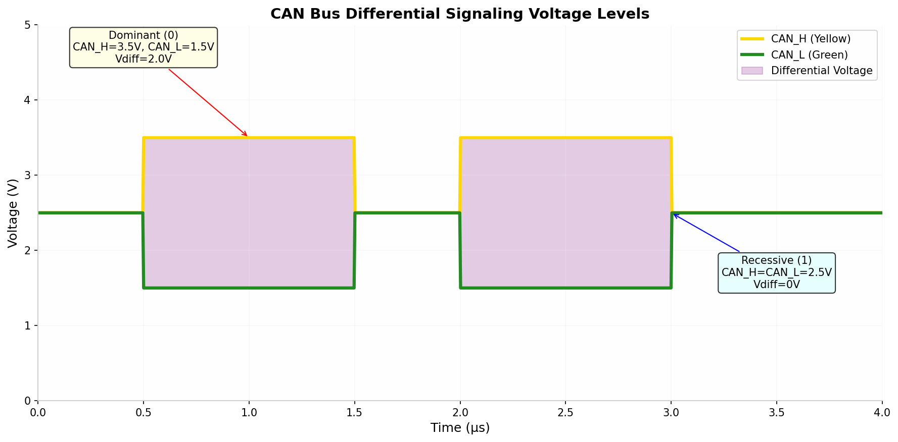
The two logical states are defined as follows:
| State | CAN_H | CAN_L | Differential Voltage | Logical Value |
|---|---|---|---|---|
| Dominant | 3.5V (typical) | 1.5V (typical) | 2.0V (typical) | 0 |
| Recessive | 2.5V (typical) | 2.5V (typical) | 0V (typical) | 1 |
Dominant state recognized when: $V_{diff} > 0.9V$ (minimum)
Recessive state recognized when: $V_{diff} < 0.5V$ (maximum)
The dominant state (logic 0) will always override the recessive state (logic 1) when multiple nodes transmit simultaneously. This property is fundamental to CAN's non-destructive arbitration mechanism.
2.2 Bus Termination
Proper termination is critical for signal integrity in CAN networks. The termination resistors serve two primary purposes:
- Impedance matching: Prevents signal reflections at the bus ends
- Recessive state biasing: Ensures the bus returns to recessive state when idle

Where $Z_0$ is the characteristic impedance of the cable (typically 120Ω for twisted pair)
Both ends of the CAN bus MUST be terminated with 120Ω resistors. Missing or incorrect termination will cause signal reflections, leading to communication errors. The total bus resistance measured between CAN_H and CAN_L with all nodes disconnected should be approximately 60Ω (two 120Ω resistors in parallel).
Termination placement options include:
- Standard termination: 120Ω resistor at each end of the bus
- Split termination: Two 60Ω resistors with center tap to ground via capacitor (improves EMI)
- Node-integrated termination: Some ECUs include switchable termination
2.3 Transceiver Characteristics
The CAN transceiver is the interface between the CAN controller and the physical bus. It converts the logic-level signals from the controller to the differential bus signals and vice versa.
| Transceiver | Manufacturer | Speed | Features |
|---|---|---|---|
| TJA1040 | NXP | 1 Mbps | Standby mode, excellent EMI |
| TJA1042 | NXP | 5 Mbps (CAN FD) | CAN FD capable, low power |
| TJA1051 | NXP | 5 Mbps (CAN FD) | Silent mode, VIO pin |
| TCAN1042 | Texas Instruments | 5 Mbps (CAN FD) | Automotive grade, CAN FD |
| MAX3051 | Maxim | 1 Mbps | +80V fault protection |
| ADM3050 | Analog Devices | 1 Mbps | Isolated transceiver |
Key Transceiver Specifications
- Supply voltage: Typically 5V ±10%
- Common-mode range: -2V to +7V (for robust applications)
- Differential output: 1.5V to 3.0V (dominant)
- Propagation delay: Typically < 100 ns
- Standby current: < 50 μA typical
When selecting a CAN transceiver, consider the maximum data rate required, EMI requirements, fault protection needs, and power consumption constraints. For CAN FD applications, ensure the transceiver supports the higher data rates (up to 8 Mbps).
Chapter 3: Data Link Layer
The Data Link Layer in CAN is responsible for message framing, arbitration, acknowledgment, and error detection. This layer is implemented in the CAN controller hardware and operates autonomously once configured by the host microcontroller.
3.1 Frame Formats
CAN defines four different frame types for communication:
- Data Frame: Carries actual data from transmitter to receivers
- Remote Frame: Requests the transmission of a specific identifier
- Error Frame: Transmitted when a node detects an error
- Overload Frame: Provides extra delay between data/remote frames
CAN supports two identifier formats:
| Feature | CAN 2.0A (Standard) | CAN 2.0B (Extended) |
|---|---|---|
| Identifier Length | 11 bits | 29 bits |
| Maximum Identifiers | 2,048 | 536,870,912 |
| IDE Bit Value | Dominant (0) | Recessive (1) |
| Frame Length (max data) | 108 bits | 128 bits |
| Compatibility | CAN 2.0A only | CAN 2.0A and 2.0B |
| Common Use | Industrial CANopen | Automotive J1939 |

Standard CAN 2.0A Data Frame Fields
| Field | Bits | Description |
|---|---|---|
| SOF | 1 | Start of Frame - dominant bit marks frame start |
| Identifier | 11 | Unique message identifier (determines priority) |
| RTR | 1 | Remote Transmission Request (dominant for data frame) |
| IDE | 1 | Identifier Extension (dominant for standard frame) |
| r0 | 1 | Reserved bit (must be dominant) |
| DLC | 4 | Data Length Code (0-8 bytes) |
| Data Field | 0-64 | Actual data payload (0-8 bytes) |
| CRC | 15 | Cyclic Redundancy Check |
| CRC Delimiter | 1 | Recessive bit |
| ACK Slot | 1 | Receiver overwrites with dominant if CRC OK |
| ACK Delimiter | 1 | Recessive bit |
| EOF | 7 | End of Frame (7 recessive bits) |
| IFS | 3 | Interframe Space (minimum 3 recessive bits) |
3.2 Bit Timing
CAN bit timing is crucial for proper synchronization and reliable communication. Each bit time is divided into segments to allow for sampling and synchronization.
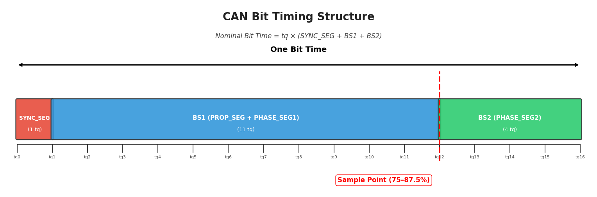
The bit time consists of the following segments:
- SYNC_SEG: Synchronization segment (1 Time Quantum) - used for edge alignment
- BS1 (Bit Segment 1): Includes PROP_SEG and PHASE_SEG1 - defines sample point location
- BS2 (Bit Segment 2): PHASE_SEG2 - provides phase buffer after sample point
Where $t_q$ (Time Quantum) = $2 \times (BRP + 1) / f_{CAN\_CLK}$
| Baud Rate | Total TQ | Sample Point | SJW |
|---|---|---|---|
| 125 kbps | 16 | 75-87.5% | 1-2 TQ |
| 250 kbps | 16 | 75-87.5% | 1-2 TQ |
| 500 kbps | 16 | 80-87.5% | 1-2 TQ |
| 1 Mbps | 8-16 | 80-87.5% | 1 TQ |
The sample point should be positioned at 75-87.5% of the bit time. A later sample point (closer to 87.5%) provides better tolerance for propagation delays, while an earlier sample point (closer to 75%) provides better tolerance for phase errors.
3.3 Synchronization
CAN uses two types of synchronization to maintain bit timing across all nodes:
Hard Synchronization
Occurs once at the start of frame (SOF). All nodes restart their internal bit timing when the recessive-to-dominant edge of SOF is detected.
Resynchronization
Occurs during the frame when an edge is detected outside the SYNC_SEG. The PHASE_SEG1 is lengthened or PHASE_SEG2 is shortened by up to SJW (Synchronization Jump Width) time quanta.
Typical SJW value: 1-2 Time Quanta
The resynchronization mechanism allows CAN to compensate for clock drift between nodes. With proper configuration, CAN can tolerate oscillator tolerances of up to 1.58% for a bit time of 10 TQ.
Chapter 4: Error Handling
CAN incorporates comprehensive error detection and handling mechanisms that contribute to its high reliability. The protocol achieves a residual error probability of less than 4.7 × 10⁻¹¹, making it suitable for safety-critical applications.
4.1 Error Types
CAN defines five types of errors that can be detected:
| Error Type | Detection Method | Description |
|---|---|---|
| Bit Error | Transmitter monitoring | Transmitter monitors bus level and compares with sent bit |
| Stuff Error | Bit stuffing rule | More than 5 consecutive bits of same polarity detected |
| CRC Error | CRC check | Calculated CRC doesn't match received CRC |
| Form Error | Fixed-form bit fields | Violation in CRC delimiter, ACK delimiter, or EOF |
| Acknowledgment Error | ACK slot check | No dominant bit detected in ACK slot |
Bit Stuffing
Bit stuffing is used to ensure enough edges for synchronization. After 5 consecutive bits of the same polarity, an opposite polarity bit is inserted by the transmitter and removed by the receiver.
For a standard CAN frame with 8 data bytes, the maximum number of stuff bits is 24. This results in a maximum frame size of 132 bits (108 + 24 stuff bits).
4.2 TEC and REC Counters
Each CAN node maintains two error counters to track its error status:
- Transmit Error Counter (TEC): Tracks errors during message transmission
- Receive Error Counter (REC): Tracks errors during message reception
| Event | TEC Update | REC Update |
|---|---|---|
| Transmitter detects error | +8 | - |
| Receiver detects error | - | +1 |
| Successful transmission | -1 (if TEC > 0) | - |
| Successful reception | - | -1 (if REC > 0) |
| Error flag after dominant ACK error | +8 | - |
4.3 Bus States
Based on the TEC and REC values, a CAN node can be in one of three states:

| State | Condition | Behavior |
|---|---|---|
| Error Active | TEC < 128 AND REC < 128 | Normal operation, transmits Active Error Flags |
| Error Passive | 128 ≤ TEC < 255 OR REC ≥ 128 | Transmits Passive Error Flags, 8-bit delay after transmission |
| Bus Off | TEC = 255 | No bus participation, requires recovery sequence |
Bus Off Recovery
When a node enters Bus Off state, it must undergo a recovery sequence before returning to Error Active state:
- Node detects 128 occurrences of 11 consecutive recessive bits (128 × 11 bit times)
- TEC and REC are reset to 0
- Node returns to Error Active state
A node entering Bus Off state indicates a serious problem - either a hardware fault, incorrect bit timing configuration, or severe bus disturbances. In automotive applications, this typically triggers a diagnostic trouble code (DTC) and may illuminate the MIL (Malfunction Indicator Lamp).
4.4 Fault Confinement & Bus-Off Recovery
ISO 11898 defines fault confinement as the mechanism that prevents a malfunctioning node from permanently disrupting the bus. The protocol uses TEC/REC counters (Section 4.2) to progressively isolate a faulty node through three states: Error Active → Error Passive → Bus Off. This graduated response ensures that a single defective node cannot lock out the entire network.
Recovery Time Calculation
When a node enters Bus Off state, it must wait for 128 occurrences of 11 consecutive recessive bits before returning to Error Active. The minimum recovery time depends on the bus data rate:
| Data Rate | Bit Time | Recovery Bits (128 × 11) | Minimum Recovery Time |
|---|---|---|---|
| 125 kbit/s | 8 µs | 1,408 | 11.26 ms |
| 250 kbit/s | 4 µs | 1,408 | 5.63 ms |
| 500 kbit/s | 2 µs | 1,408 | 2.82 ms |
| 1 Mbit/s | 1 µs | 1,408 | 1.41 ms |
The formula is: Recovery Time = 128 × 11 × Bit Time. During recovery, the node remains silent and only monitors bus activity.
Auto Bus-On vs. Manual Recovery
After completing the 128 × 11 bit recovery sequence, the node can re-join the bus either automatically or through explicit software intervention:
| Aspect | Auto Bus-On (ABOM) | Manual Recovery |
|---|---|---|
| Recovery Trigger | Automatic after 128 × 11 bit times | Software must explicitly reinitialize the CAN peripheral |
| Downtime | Minimal (1.4–11.3 ms depending on baud rate) | Depends on application polling interval |
| Root Cause Analysis | May mask recurring faults if not logged | Forces application to handle and log the event |
| Typical Use Case | Production ECUs, safety-critical systems | Development/debugging, bench testing |
| Risk | Rapid re-entry may cause repeated bus-off cycles | Extended communication loss if recovery is delayed |
Driver / HAL Configuration
Most CAN controllers provide a hardware register bit to enable automatic bus-off recovery. Below are common configuration examples:
STM32 HAL (bxCAN / FDCAN)
/* Enable Automatic Bus-Off Management */
hcan.Init.AutoBusOff = ENABLE;
HAL_CAN_Init(&hcan);
/* For FDCAN peripherals: */
hfdcan.Init.AutoRetransmission = ENABLE;
hfdcan.Init.TransmitPause = ENABLE;
HAL_FDCAN_Init(&hfdcan);Linux SocketCAN
# Enable automatic restart after 100 ms delay
ip link set can0 type can restart-ms 100
# Manual one-shot restart
ip link set can0 type can restartAUTOSAR CanSM (CAN State Manager)
In AUTOSAR-based ECUs, the CanSM module manages CAN controller state transitions. When bus-off is detected, CanSM follows a configurable recovery strategy:
- Level 1 (L1): Fast recovery — attempts
CanSMBorCounterL1ToL2restarts withCanSMBorTimeL1interval (typically 10–50 ms) - Level 2 (L2): Slow recovery — if L1 fails, switches to
CanSMBorTimeL2interval (typically 100–500 ms) - Recovery counters and timings are defined in the CanSM configuration container
If a node repeatedly enters Bus Off state shortly after recovery, this indicates a persistent fault — typically a wiring short, termination mismatch, or baud rate misconfiguration. Enabling auto bus-on without monitoring creates a rapid bus-off / recovery cycle that floods the bus with error frames and degrades communication for all nodes.
Enable auto bus-on (ABOM) in production, but always log bus-off events as a diagnostic trouble code (DTC). Implement a bus-off counter with a cooldown window — if bus-off occurs more than 3 times within 1 second, disable auto-recovery and escalate via diagnostic services (e.g., UDS DTC 0x600110).
Chapter 5: Network Topology
Proper network topology design is essential for reliable CAN communication. The physical layout of the bus, including wiring practices, stub lengths, and termination, directly impacts signal integrity and system robustness.
5.1 Bus Wiring
CAN uses a linear bus topology where all nodes connect to a single transmission line. The bus consists of two wires (CAN_H and CAN_L) that should be routed as a twisted pair to minimize electromagnetic interference.
Key wiring guidelines:
- Use twisted pair cable with characteristic impedance of 120Ω
- Maintain consistent wire gauge throughout the bus (typically 0.25-0.5 mm² / 22-24 AWG)
- Route CAN wires away from high-current power lines
- Use shielded cable in high-EMI environments
- Ground the shield at one end only (typically at the diagnostic connector)
| Data Rate | Maximum Bus Length | Maximum Stub Length |
|---|---|---|
| 1 Mbps | 40 meters | 0.3 meters |
| 500 kbps | 100 meters | 0.6 meters |
| 250 kbps | 250 meters | 1.5 meters |
| 125 kbps | 500 meters | 3.0 meters |
| 50 kbps | 1000 meters | 6.0 meters |
| 20 kbps | 2500 meters | 15.0 meters |
Where $L_{max}$ is in meters and Baud Rate is in bits per second
5.2 Stub Lengths
Stubs are the connections from the main bus to individual nodes. Long stubs create impedance mismatches that cause signal reflections, degrading signal quality.
Stub lengths should be kept as short as possible. As a general rule, the stub length should not exceed 0.3 meters at 1 Mbps. The maximum stub length increases proportionally as the data rate decreases.
For applications requiring longer stubs or drop-line topology, consider:
- Low-speed CAN (ISO 11898-3): Supports star topology with longer stubs
- CAN repeaters: Extend bus length and isolate segments
- Optical isolation: Provides galvanic isolation between segments
5.3 Cable Specifications
| Parameter | Specification | Notes |
|---|---|---|
| Characteristic Impedance | 120Ω ± 12Ω | At 1 MHz |
| Conductor Cross-section | 0.25-0.5 mm² (22-24 AWG) | Based on current requirements |
| Twist Rate | 20-50 twists per meter | Higher twist rate = better EMI immunity |
| Propagation Delay | < 5 ns/m | For high-speed applications |
| Capacitance | < 60 pF/m | Between conductors |
| Insulation Resistance | > 1 MΩ/km | At 500V DC |
Common cable types for CAN applications:
- UTP (Unshielded Twisted Pair): Cost-effective, suitable for controlled environments
- STP (Shielded Twisted Pair): Better EMI protection, recommended for automotive
- Double-shielded: Maximum EMI protection for harsh environments
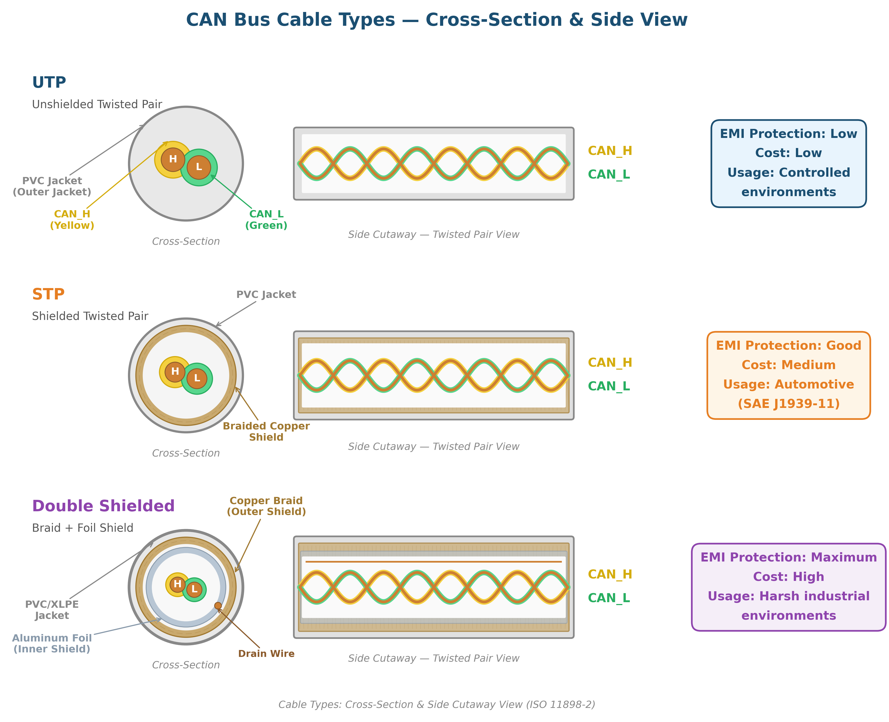
Automotive applications typically use cables meeting SAE J1939/11 or SAE J2284 specifications. These specify twisted pair with 120Ω characteristic impedance and PVC or XLPE insulation, designed for the automotive temperature range of -40°C to +125°C.
Chapter 6: SAE J1939 Protocol Stack
SAE J1939 is the standard communication protocol for commercial vehicles (trucks, buses, agricultural machinery, construction equipment). Built on CAN 2.0B, J1939 defines a complete application layer with standardized message formats, network management, and diagnostic procedures.
6.1 29-bit Identifier Structure
J1939 exclusively uses the CAN 2.0B extended frame format with a 29-bit identifier. This identifier is structured to provide priority, parameter group identification, and source addressing.
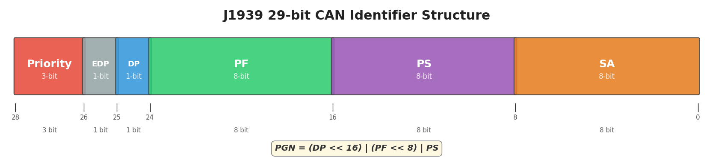
| Field | Bits | Description |
|---|---|---|
| Priority (P) | 3 | Message priority (0=highest, 7=lowest) |
| Extended Data Page (EDP) | 1 | Reserved (must be 0) |
| Data Page (DP) | 1 | Expands PGN range (0 or 1) |
| PDU Format (PF) | 8 | Determines PDU type (PDU1 or PDU2) |
| PDU Specific (PS) | 8 | Destination address (PDU1) or Group Extension (PDU2) |
| Source Address (SA) | 8 | Address of transmitting node (0-253) |
6.2 PGN Structure
The Parameter Group Number (PGN) uniquely identifies a group of related parameters. PGNs are 18-bit values derived from the DP, PF, and PS fields.
There are two PDU types in J1939:
| Type | PF Range | PS Field | Communication |
|---|---|---|---|
| PDU1 (Destination Specific) | 0-239 (0x00-0xEF) | Destination Address | Point-to-point |
| PDU2 (Global) | 240-255 (0xF0-0xFF) | Group Extension | Broadcast |
PGN Range Allocation
The complete PGN address space is divided between SAE-defined and manufacturer-assignable ranges, organized by Data Page (DP) bit and PDU format:
| DP | PGN Range (hex) | Number of PGNs | SAE or Manufacturer Assigned | Communication Type |
|---|---|---|---|---|
| 0 | 000000 – 00EE00 | 239 | SAE | PDU1: Peer-to-Peer |
| 0 | 00EF00 | 1 | MF | PDU1: Peer-to-Peer |
| 0 | 00F000 – 00FEFF | 3840 | SAE | PDU2: Broadcast |
| 0 | 00FF00 – 00FFFF | 256 | MF | PDU2: Broadcast |
| 1 | 010000 – 01EE00 | 239 | SAE | PDU1: Peer-to-Peer |
| 1 | 01EF00 | 1 | MF | PDU1: Peer-to-Peer |
| 1 | 01F000 – 01FEFF | 3840 | SAE | PDU2: Broadcast |
| 1 | 01FF00 – 01FFFF | 256 | MF | PDU2: Broadcast |
SAE-assigned PGNs are defined in SAE J1939-71 and have standardized meanings across all J1939 networks. Manufacturer-specific (MF) PGNs (PGN 0xEF00 and range 0xFF00–0xFFFF for each Data Page) are available for proprietary use. OEMs and ECU manufacturers can use MF PGNs for custom parameters without conflicting with standardized PGNs. The total address space provides 8,672 PGNs across both Data Pages.
Common J1939 PGNs include:
| PGN | Name | Description | Rate |
|---|---|---|---|
| 61444 (0x00F004) | Electronic Engine Controller 1 (EEC1) | Engine speed, torque | 10 ms |
| 61443 (0x00F003) | Electronic Engine Controller 2 (EEC2) | Accelerator pedal, road speed | 50 ms |
| 65248 (0x00FF00) | Vehicle Distance | Odometer, trip distance | 1 s |
| 65265 (0x00FF07) | Cruise Control/Vehicle Speed | Cruise control status | 100 ms |
| 65262 (0x00FF04) | Engine Temperature 1 | Coolant, fuel temperatures | 1 s |
| 65263 (0x00FF05) | Engine Fluid Level/Pressure 1 | Oil pressure, coolant level | 500 ms |
| 59904 (0x00EA00) | Request PGN | Request for specific PGN | On demand |
SPN — Suspect Parameter Number
Each PGN contains one or more Suspect Parameter Numbers (SPNs) — individual signals within the 8-byte data field. SPNs define the start position, length, resolution, offset, and unit for each parameter. The physical value is calculated from the raw data bytes using:
Example — Engine Speed (SPN 190 in PGN 61444 / EEC1):
| Property | Value |
|---|---|
| PGN | 61444 (0x00F004) — Electronic Engine Controller 1 |
| SPN | 190 — Engine Speed |
| Start Byte.Bit | 4.1 (byte 4, bit 1 — zero-indexed) |
| Length | 16 bits (2 bytes) |
| Resolution | 0.125 rpm/bit |
| Offset | 0 rpm |
| Range | 0 – 8031.875 rpm |
For raw bytes FF FF FF 68 13 FF FF FF (hex), extract bytes 4–5: 0x1368 = 4968 decimal. Physical value: 4968 × 0.125 = 621 rpm.
In J1939, data bytes set to 0xFF (all ones) indicate "Not Available" or invalid data. When decoding SPNs, any raw value that consists entirely of 0xFF bytes should be excluded from analysis. For 2-byte SPNs, 0xFFFF means the parameter is not available; for 1-byte SPNs, 0xFF means invalid.
J1939 Request Messages
Not all PGNs are broadcast periodically. Some parameters must be explicitly requested using PGN 59904 (0xEA00) — the Request PGN. The requesting node sends a 3-byte data field containing the PGN it wants to receive:
| Byte | Content | Description |
|---|---|---|
| 1 | PGN[7:0] | Least significant byte of requested PGN |
| 2 | PGN[15:8] | Middle byte of requested PGN |
| 3 | PGN[23:16] | Most significant byte of requested PGN |
6.3 Address Claiming
J1939 uses a dynamic address claiming procedure to resolve address conflicts on the network. Each node has a preferred NAME and address.
The 64-bit NAME structure:
| Field | Bits | Description |
|---|---|---|
| Arbitrary Address Capable | 1 | Node can use arbitrary address |
| Industry Group | 3 | Industry classification (0-7) |
| Vehicle System Instance | 4 | Instance of vehicle system |
| Vehicle System | 7 | Vehicle system classification |
| Reserved | 1 | Reserved (0) |
| Function | 8 | Function code (e.g., engine, transmission) |
| Function Instance | 5 | Instance of function |
| ECU Instance | 3 | ECU instance within function |
| Manufacturer Code | 11 | SAE-assigned manufacturer ID |
| Identity Number | 21 | Unique serial number |
Address Claiming Flow:
- Power On → Send Address Claimed
- Check for Address Conflict
- No Conflict → Normal Operation
- Conflict Detected → Compare NAME values
- Higher NAME wins → Claim Address
- Lower NAME loses → Send Cannot Claim, Wait for Command
When two nodes attempt to claim the same address, the node with the higher NAME (numerically greater) wins the arbitration. The losing node must either claim a different address or enter the "Cannot Claim" state.
6.4 Physical Layer and Connector Specifications
The J1939 physical layer defines the electrical and mechanical characteristics for connecting ECUs on the CAN bus. The SAE J1939-13 standard specifies the 9-pin Deutsch HD10-9-1939 off-board diagnostic connector — the primary standardized interface for accessing J1939 networks in heavy-duty vehicles.
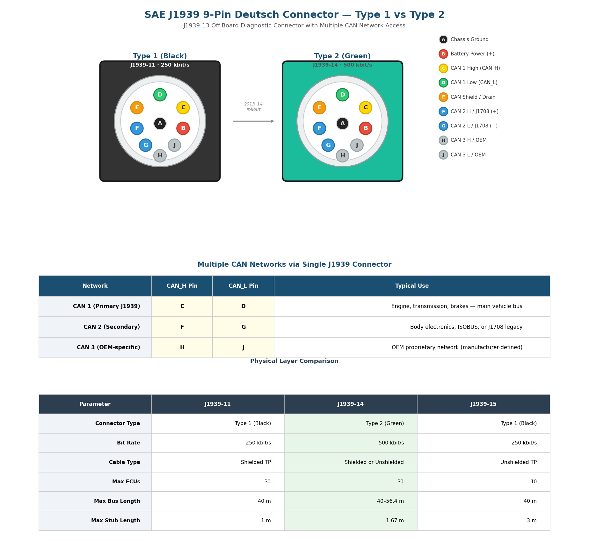
Type 1 (Black) vs Type 2 (Green) Connectors
The J1939 Deutsch connector comes in two variants:
- Type 1 (Black housing): The original connector defined by J1939-11, operating at 250 kbit/s. This has been the standard connector in heavy-duty vehicles since the mid-1990s.
- Type 2 (Green housing): Introduced around 2013–14 for the J1939-14 standard, supporting 500 kbit/s networks. The green color provides visual differentiation.
Type 2 female connectors are physically backwards compatible — they fit both Type 1 and Type 2 male sockets. However, Type 1 female connectors only fit Type 1 male sockets. The physical blocking mechanism is a smaller hole for Pin F in Type 2 male connectors, preventing older 250K hardware from being connected to 500K networks.
Multiple J1939 Networks
Many modern heavy-duty vehicles have 2 or more parallel CAN bus networks. The 9-pin Deutsch connector can provide access to up to three separate CAN networks through different pin pairs:
| Network | CAN_H | CAN_L | Typical Use |
|---|---|---|---|
| CAN 1 (Primary) | Pin C | Pin D | Main J1939 vehicle bus — engine, transmission, brakes |
| CAN 2 (Secondary) | Pin F | Pin G | Body electronics, ISOBUS, or legacy J1708 serial |
| CAN 3 (OEM) | Pin H | Pin J | OEM-proprietary network (manufacturer-defined) |
Connecting only to Pin C and Pin D (the standard pair) does not guarantee access to all available J1939 data. If the vehicle uses multiple CAN networks, critical parameters may only be available on the secondary (F/G) or OEM-specific (H/J) bus. When logging data, use a dual-channel CAN logger with a DB9-to-J1939 adapter cable to capture data from both networks simultaneously.
Physical Layer Standards
Three key SAE standards specify different physical layer configurations optimized for various vehicle environments:
J1939-11 is the original physical layer standard, specifying a shielded twisted pair cable with 120 Ω termination resistors at each end of the bus. It supports up to 30 ECUs at 250 kbit/s with a maximum bus length of 40 m and stub lengths up to 1 m.
J1939-15 provides a reduced-cost alternative for lighter-duty applications. It uses unshielded twisted pair cabling and allows longer stub lengths (up to 3 m), but limits the network to 10 ECUs due to reduced noise immunity.
J1939-14 targets higher bandwidth applications with a 500 kbit/s data rate. It accepts both shielded and unshielded wiring, supports up to 30 ECUs, and allows bus lengths between 40 m and 56.4 m depending on the cable type used.
6.5 J1939 Document Structure and Related Standards
The SAE J1939 standard suite is organized into numbered documents, each covering a specific aspect of the protocol. The following figure shows the complete document family organized by protocol layer:
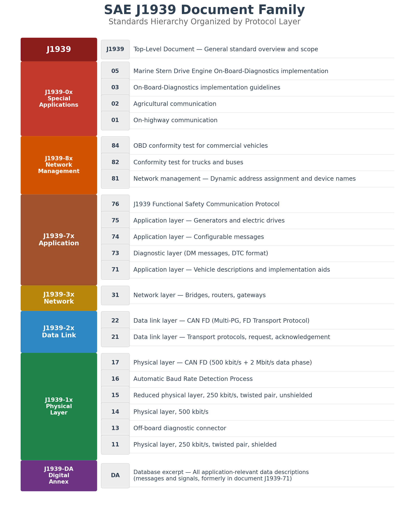
Standards Based on J1939
The J1939 protocol serves as the foundation for several industry-specific communication standards through SAE's consortium approach:
| Standard | Industry | Relationship to J1939 |
|---|---|---|
| ISO 11783 (ISOBUS) | Agriculture | Extends J1939 for tractors and implements; adds task controller, virtual ECU |
| NMEA 2000 | Marine | Adapts J1939 for marine electronics with device class definitions |
| ISO 11992 | Truck-Trailer | J1939-based communication between truck and trailer via ISO 7638 connector |
| FMS Standard | Fleet Management | Subset of J1939 PGNs exposed via a standard gateway interface for telematics |
| MilCAN | Military | Military adaptation with deterministic scheduling requirements |
SAE licenses the J1939 base standard to industry organizations who then extend it for their specific domains. This consortium approach ensures that developments in the base J1939 standard (e.g., CAN FD support via J1939-22) can propagate to all derived standards while allowing each industry to define domain-specific PGNs, device types, and application profiles.
6.6 J1939 Request Mechanism
J1939 provides a general-purpose request mechanism using PGN 59904 (0xEA00) — the Request PGN. Any node can request any PGN from a specific ECU (destination-specific) or from all ECUs on the bus (global request). This is essential for retrieving parameters that are not broadcast periodically.
Request vs Broadcast Model
J1939 uses two communication models:
| Model | Mechanism | Examples |
|---|---|---|
| Periodic Broadcast | ECU sends PGN at fixed intervals (10 ms – 10 s) | EEC1 (Engine Speed, 10 ms), CCVS1 (Vehicle Speed, 100 ms) |
| On-Request | PGN sent only when explicitly requested via PGN 59904 | Software Identification, Component ID, ECU Identification |
| Event-Driven | PGN sent when a specific condition occurs | DM1 (active DTC detected), Address Claimed |
Request Message Structure
The Request PGN uses a 3-byte data field containing the PGN being requested, sent in little-endian byte order:
Request PGN (0xEA00) — CAN ID: 0x18EAFF[SA] (global) or 0x18EA[DA][SA] (destination-specific)
CAN ID breakdown:
Priority: 6 (0x18 = 0b110...)
PGN: 0xEA00 (59904) — Request PGN
DA: 0xFF (global) or specific destination address
SA: Source address of requester
Data (3 bytes):
Byte 1: PGN[7:0] — LSB of requested PGN
Byte 2: PGN[15:8] — Middle byte
Byte 3: PGN[23:16] — MSB of requested PGNRequest/Response Example: Request Engine Speed (EEC1)
Step 1 — Service Tool (SA=0xF9) requests PGN 61444 from Engine ECU (DA=0x00):
CAN ID: 0x18EA00F9 Data: [04 F0 00]
│ │ └─ PGN MSB = 0x00
│ └──── PGN mid = 0xF0
└─────── PGN LSB = 0x04 → PGN = 0x00F004 = 61444
Step 2 — Engine ECU (SA=0x00) responds with EEC1:
CAN ID: 0x0CF00400 Data: [FF FF FF 68 13 FF FF FF]
│ └─ Byte 5 = 0x13
└──── Byte 4 = 0x68
Engine Speed (SPN 190) = 0x1368 × 0.125 = 621.0 rpmWhen DA = 0xFF, the request is global — all ECUs that support the requested PGN will respond. This is useful for discovery (e.g., requesting Address Claimed from all nodes). When DA is a specific address, only that ECU responds. For Transport Protocol messages (>8 bytes), the responding ECU initiates a TP.CM_RTS/CTS or BAM sequence to deliver the multi-packet response.
6.7 Identification Requests
J1939 defines several standard PGNs for ECU identification. These are typically on-request PGNs that provide software version, hardware identity, and component information. They are essential for fleet management, diagnostics, and regulatory compliance.
Software Identification (PGN 65242 / 0xFEDA)
Reports the software version(s) installed on the ECU. This PGN is used by diagnostic tools and fleet management systems to verify ECU firmware versions across a vehicle fleet.
| Byte | SPN | Description |
|---|---|---|
| 1 | SPN 965 | Number of software identification fields |
| 2–n | SPN 234 | Software identification (ASCII string, * delimited for multiple versions) |
Example — Request Software ID from Body Controller:
Request: CAN ID: 0x18EA21F9 Data: [DA FE 00] ← PGN 65242 (0xFEDA)
Response: via BAM (broadcast, because PGN 0xFEDA is PDU2 format — PF ≥ 0xF0)
TP.CM_BAM: CAN ID: 0x18ECFF21 Data: [20 12 00 03 FF DA FE 00]
TP.DT.1: CAN ID: 0x18EBFF21 Data: [01 02 42 43 4D 5F 41 50]
TP.DT.2: CAN ID: 0x18EBFF21 Data: [02 50 5F 76 32 2E 31 2E]
TP.DT.3: CAN ID: 0x18EBFF21 Data: [03 30 2A 42 43 4D 5F 49]
Decoded: Count=2, "BCM_APP_v2.1.0*BCM_IO_v1.3"Component Identification (PGN 65259 / 0xFEEB)
Provides the ECU manufacturer, model, and serial number as ASCII strings. Each field is delimited by * (asterisk).
| Field | SPN | Description |
|---|---|---|
| Make | SPN 586 | Component manufacturer name (ASCII) |
| Model | SPN 587 | Component model designation (ASCII) |
| Serial Number | SPN 588 | Component serial number (ASCII) |
| Unit Number | SPN 233 | Unit/asset number assigned by owner (ASCII) |
Decoded Component ID example:
"BOSCH*EDC17C46*0281020567*FLEET-4821"
│ │ │ └─ Unit Number (SPN 233)
│ │ └───────────── Serial Number (SPN 588)
│ └──────────────────────── Model (SPN 587)
└─────────────────────────────── Make (SPN 586)ECU Identification (PGN 64965 / 0xFDC5)
Provides the ECU part number and ECU type information. Unlike Component Identification which describes the physical component, ECU Identification provides the manufacturer's part and type codes used for service and replacement.
| Field | SPN | Description |
|---|---|---|
| ECU Part Number | SPN 2901 | Manufacturer's part number for the ECU (ASCII) |
| ECU Serial Number | SPN 2902 | Unique serial number for the ECU unit (ASCII) |
| ECU Location | SPN 2903 | Physical installation location description (ASCII) |
| ECU Type | SPN 2904 | Functional type of ECU (ASCII) |
Vehicle Identification (PGN 65260 / 0xFEEC)
Broadcasts the Vehicle Identification Number (VIN) — a 17-character ASCII string. This PGN is broadcast by the vehicle gateway or body controller and is used to identify the vehicle in diagnostic and fleet management contexts.
PGN 65260 (0xFEEC) — Vehicle Identification:
SPN 237: Vehicle Identification Number (VIN)
Data: 17-byte ASCII string (e.g., "WDB9634031L123456")
Transmitted via BAM (requires 3 TP.DT packets)Summary: Common Identification PGNs
| PGN | Hex | Name | Key SPNs | Typical Size |
|---|---|---|---|---|
| 65242 | 0xFEDA | Software Identification | SPN 234, 965 | Variable (BAM) |
| 65259 | 0xFEEB | Component Identification | SPN 586, 587, 588, 233 | Variable (BAM) |
| 64965 | 0xFDC5 | ECU Identification | SPN 2901–2904 | Variable (BAM) |
| 65260 | 0xFEEC | Vehicle Identification | SPN 237 (VIN) | 17 bytes (BAM) |
| 65243 | 0xFEDB | Calibration Identification | SPN 1634, 1635 | Variable (BAM) |
All identification PGNs contain variable-length ASCII data and typically exceed 8 bytes. When responding to a request, the ECU uses the BAM (Broadcast Announce Message) transport protocol for global responses, or RTS/CTS for destination-specific responses. Diagnostic tools must implement the J1939 Transport Protocol (see Chapter 7) to receive these multi-packet responses.
Chapter 7: J1939 Transport Protocol
Since CAN frames are limited to 8 data bytes, J1939 defines a Transport Protocol (TP) for transmitting larger messages. The transport protocol supports two modes: Connection Mode (CM) for point-to-point communication and Broadcast Announce Message (BAM) for global broadcasts.
7.1 TP.CM and TP.DT
The Connection Mode transport protocol uses two PGNs:
- TP.CM (PGN 60416): Transport Protocol Connection Management - controls connection setup
- TP.DT (PGN 60160): Transport Protocol Data Transfer - carries actual data packets
TP.CM Control Bytes
| Value | Name | Description |
|---|---|---|
| 16 (0x10) | RTS | Request to Send - initiates connection |
| 17 (0x11) | CTS | Clear to Send - acknowledges RTS |
| 19 (0x13) | End of Message ACK | Acknowledges complete reception |
| 255 (0xFF) | Abort | Aborts connection |
| 32 (0x20) | BAM | Broadcast Announce Message |
RTS Message Format (TP.CM)
Byte 0: Control Byte = 0x10 (RTS)
Byte 1-2: Total message size (bytes) - LSB first
Byte 3: Total number of packets
Byte 4: Reserved (0xFF)
Byte 5-7: PGN of requested message - LSB firstCTS Message Format (TP.CM)
Byte 0: Control Byte = 0x11 (CTS)
Byte 1: Number of packets that can be sent
Byte 2: Next packet number to be sent
Byte 3-4: Reserved (0xFFFF)
Byte 5-7: PGN - LSB firstTP.DT Data Packet Format
Byte 0: Sequence number (1-255)
Byte 1-7: Data (up to 7 bytes per packet)7.2 BAM Protocol
The Broadcast Announce Message (BAM) protocol is used for global broadcasts where no connection management is required. The transmitting node announces the message and then broadcasts all data packets.
BAM Message Format (TP.CM)
Byte 0: Control Byte = 0x20 (BAM)
Byte 1-2: Total message size (bytes) - LSB first
Byte 3: Total number of packets
Byte 4: Reserved (0xFF)
Byte 5-7: PGN of broadcast message - LSB firstBAM does not provide flow control or acknowledgment. The transmitter sends all packets at 50-200 ms intervals regardless of receiver capability. BAM is limited to 1785 bytes (255 packets × 7 bytes).
7.3 Multi-packet Messages
The transport protocol can handle messages up to 1785 bytes using up to 255 data packets. Each TP.DT frame carries a sequence number and up to 7 data bytes.
Maximum message size: 255 × 7 = 1785 bytes
Example: Transmitting a 100-byte message
1. Send TP.CM RTS:
- Total size: 100 bytes
- Number of packets: ceil(100/7) = 15
- PGN: 0x00FF00 (example)
2. Receive TP.CM CTS:
- Number of packets allowed: 1-255
- Next packet: 1
3. Send TP.DT packets 1-15:
- Each packet: 7 bytes (except last may have less)
- Packet 15: only 2 bytes (100 - 14×7 = 2)
4. Receive TP.CM End of Message ACKConnection Mode Transport Protocol Sequence:
- Sender → Receiver: TP.CM RTS (Request to Send)
- Receiver → Sender: TP.CM CTS (Clear to Send)
- Sender → Receiver: TP.DT #1 (Data Transfer Packet 1)
- Sender → Receiver: TP.DT #2 (Data Transfer Packet 2)
- Continue until all packets sent...
- Receiver → Sender: TP.CM EOM (End of Message ACK)
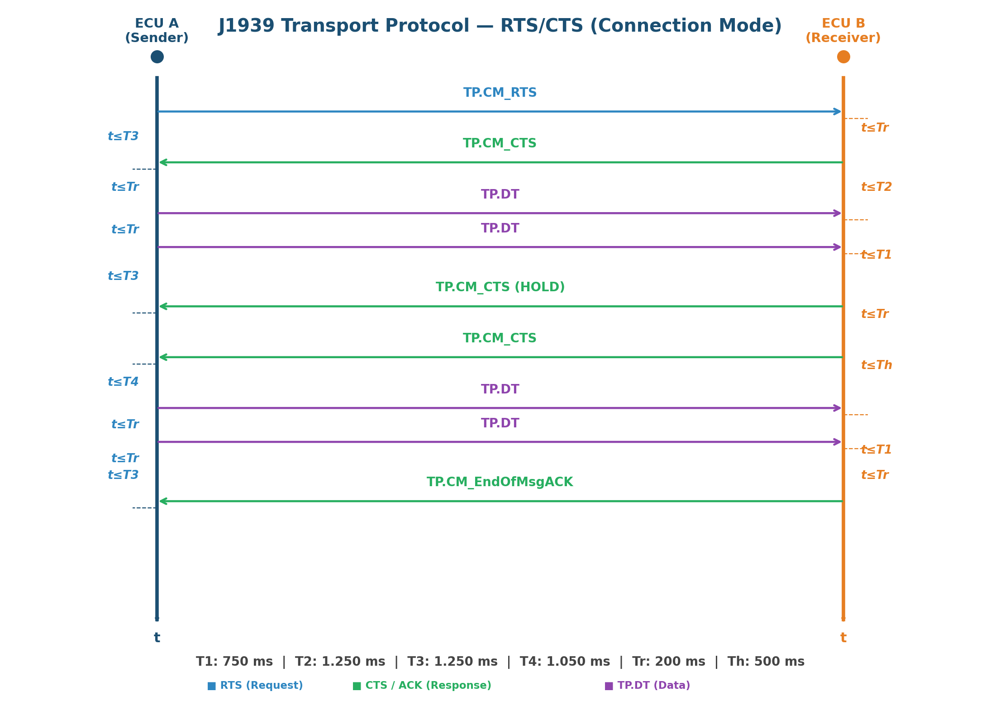
RTS/CTS Timeout Parameters
The J1939-21 standard defines strict timeout values for each phase of the RTS/CTS handshake. Violating these timeouts results in connection abort:
| Timeout | Value | Monitored By | Description |
|---|---|---|---|
| T1 | 750 ms | Receiver | Maximum wait between consecutive TP.DT packets |
| T2 | 1250 ms | Receiver | Maximum wait after sending CTS before first TP.DT arrives |
| T3 | 1250 ms | Sender | Maximum wait for CTS response after sending RTS or last TP.DT |
| T4 | 1050 ms | Sender | Maximum wait for CTS after receiving CTS(HOLD) |
| Tr | 200 ms | Both | Maximum response time for protocol messages |
| Th | 500 ms | Receiver | Hold timeout — time receiver may request sender to wait |
CTS HOLD Mechanism
The receiver can temporarily pause data transfer by sending a CTS with "number of packets = 0" (CTS HOLD). This signals the sender to wait without aborting the connection. The receiver uses this when its internal buffers are full or processing is temporarily blocked. The sender waits up to T4 (1050 ms) for a new CTS before aborting.
BAM Sequence Diagram

In BAM mode, the transmitter sends TP.DT packets at intervals of 10 to 200 ms. The receiver monitors T1 (750 ms) between consecutive packets — if no packet arrives within T1, the transfer is considered failed. In RTS/CTS mode, the sender monitors T3 (1250 ms) waiting for CTS, and the receiver monitors T1 (750 ms) between TP.DT packets and T2 (1250 ms) after sending CTS before receiving the first TP.DT.
Chapter 8: J1939 Diagnostics
J1939 provides comprehensive diagnostic capabilities through standardized Diagnostic Message (DM) PGNs and a structured Diagnostic Trouble Code (DTC) format. The diagnostic system enables fault detection, reporting, and clearing across all vehicle systems.
8.1 DTC Structure
J1939 Diagnostic Trouble Codes follow a standardized format that provides detailed information about detected faults.
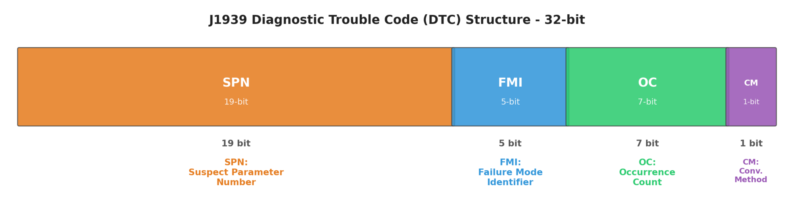
8.2 SPN-FMI-OC-CM
The DTC consists of four fields:
| Field | Bits | Description |
|---|---|---|
| SPN (Suspect Parameter Number) | 19 | Identifies the specific parameter with fault (0-524287) |
| FMI (Failure Mode Identifier) | 5 | Type of failure detected (0-31) |
| OC (Occurrence Count) | 7 | Number of fault occurrences (0-126, 127=not available) |
| CM (Conversion Method) | 1 | SPN conversion method (0=method 1, 1=method 2) |
Common FMI Values
| FMI | Description | Typical Cause |
|---|---|---|
| 0 | Data Valid But Above Normal Range | Sensor reading too high |
| 1 | Data Valid But Below Normal Range | Sensor reading too low |
| 2 | Data Erratic, Intermittent, or Incorrect | Unstable signal |
| 3 | Voltage Above Normal or Shorted High | Short to power |
| 4 | Voltage Below Normal or Shorted Low | Short to ground |
| 5 | Current Below Normal or Open Circuit | Open circuit, broken wire |
| 6 | Current Above Normal or Grounded Circuit | Short circuit |
| 7 | Mechanical System Not Responding | Actuator failure |
| 8 | Abnormal Frequency or Pulse Width | Signal interference |
| 9 | Abnormal Update Rate | Communication failure |
| 10 | Abnormal Rate of Change | Rapid signal change |
| 11 | Root Cause Not Known | Unknown failure |
| 12 | Bad Intelligent Device or Component | Component malfunction |
| 13 | Out of Calibration | Calibration required |
| 14 | Special Instructions | See service manual |
| 15 | Data Valid But Above Normal Range (Least Severe) | Warning threshold |
| 16 | Data Valid But Above Normal Range (Moderately Severe) | Critical threshold |
| 17 | Data Valid But Below Normal Range (Least Severe) | Warning threshold |
| 18 | Data Valid But Below Normal Range (Moderately Severe) | Critical threshold |
| 31 | Condition Exists | General condition |
8.3 DM Messages
Diagnostic Messages (DM) are PGNs used for diagnostic communication. They enable reading DTCs, clearing faults, and accessing diagnostic data.
| DM | PGN | Name | Description |
|---|---|---|---|
| DM1 | 65226 (0x00FECA) | Active Diagnostic Trouble Codes | Broadcasts active DTCs |
| DM2 | 65227 (0x00FECB) | Previously Active DTCs | DTCs that are now inactive |
| DM3 | 65228 (0x00FECC) | Clear Previously Active DTCs | Command to clear DM2 DTCs |
| DM4 | 65229 (0x00FECD) | Freeze Frame Parameters | Snapshots of parameters at fault |
| DM5 | 65230 (0x00FECE) | Diagnostic Readiness | Monitor readiness status |
| DM6 | 65231 (0x00FECF) | Pending DTCs | Intermittent faults |
| DM11 | 65235 (0x00FED3) | Clear Active DTCs | Command to clear DM1 DTCs |
| DM19 | 54016 (0x00D300) | Calibration Information | ECU calibration details |
| DM21 | 49408 (0x00C100) | MIL Status | Malfunction Indicator Lamp |
DM1 Active DTCs Format
Byte 0: Protect Lamp Status / Amber Warning Lamp
Byte 1: Red Stop Lamp / Malfunction Indicator Lamp
Byte 2-5: DTC #1 (SPN-FMI-OC-CM)
Byte 6-9: DTC #2 (SPN-FMI-OC-CM)
Byte 10-13: DTC #3 (SPN-FMI-OC-CM)
Byte 14-17: DTC #4 (SPN-FMI-OC-CM)
Byte 18-21: DTC #5 (SPN-FMI-OC-CM)DM1 is broadcast every 1 second when active DTCs exist. When no DTCs are active, DM1 is broadcast every 10 seconds with a lamp status of 0x00 and no DTCs.
Chapter 9: Automotive Diagnostics — OBD-II and UDS
On-Board Diagnostics (OBD) and Unified Diagnostic Services (UDS) are the two primary diagnostic protocols used in automotive applications. OBD-II is mandated for emissions-related diagnostics, while UDS (ISO 14229) provides a comprehensive framework for all manufacturer-specific diagnostic, programming, and calibration functions.
9.1 OBD-II Protocol
OBD-II (On-Board Diagnostics II) is a standardized system mandated by regulations in the United States (EPA), European Union (EOBD), and other regions. It provides access to emissions-related diagnostic information.
OBD-II Connector (J1962)
The OBD-II system uses the SAE J1962 16-pin diagnostic link connector (DLC), located under the dashboard within reach of the driver's seat. Key CAN bus pins:
| Pin | Function | Notes |
|---|---|---|
| 4 | Chassis Ground | Vehicle chassis ground reference |
| 5 | Signal Ground | Signal reference ground |
| 6 | CAN High (CAN_H) | High-speed CAN bus — yellow wire |
| 14 | CAN Low (CAN_L) | High-speed CAN bus — green wire |
| 16 | Battery Positive (+12V) | Permanent battery power, always on |
OBD-II over CAN (ISO 15765-4) is mandatory for: USA — all vehicles from model year 2008+; EU — gasoline cars from 2001+ (EOBD) and diesel cars from 2004+. Older vehicles may use other OBD-II transport protocols (ISO 9141-2, SAE J1850 VPW/PWM, ISO 14230 KWP2000) which use different DLC pins. CAN bus uses pins 6 and 14 exclusively.
OBD-II Diagnostic Modes (Services)
| Mode | Hex | Description |
|---|---|---|
| 01 | 0x01 | Current Powertrain Diagnostic Data (PID 00-FF) |
| 02 | 0x02 | Powertrain Freeze Frame Data |
| 03 | 0x03 | Emission-Related Diagnostic Trouble Codes |
| 04 | 0x04 | Clear/Reset Emission-Related Diagnostic Information |
| 05 | 0x05 | Oxygen Sensor Monitoring Test Results |
| 06 | 0x06 | On-Board Monitoring Test Results |
| 07 | 0x07 | Pending DTCs (Detected During Current Drive Cycle) |
| 08 | 0x08 | Control of On-Board System/Test |
| 09 | 0x09 | Vehicle Information (VIN, Calibration IDs) |
| 0A | 0x0A | Permanent DTCs (Emissions-related, cannot be cleared) |
OBD-II DTC Format
OBD-II DTCs are 2-byte codes following a standardized format:
P0XXX - Powertrain (ISO/SAE controlled)
P1XXX - Powertrain (Manufacturer controlled)
B0XXX - Body (ISO/SAE controlled)
B1XXX - Body (Manufacturer controlled)
C0XXX - Chassis (ISO/SAE controlled)
C1XXX - Chassis (Manufacturer controlled)
U0XXX - Network (ISO/SAE controlled)
U1XXX - Network (Manufacturer controlled)9.2 UDS Protocol
Unified Diagnostic Services (ISO 14229) is a comprehensive diagnostic protocol that supersedes the manufacturer-specific protocols used with OBD-II. UDS provides a standardized framework for all diagnostic, programming, and calibration functions.
UDS Protocol Stack
| Layer | Standard | Description |
|---|---|---|
| Application | ISO 14229 (UDS) | Diagnostic services and functions |
| Transport | ISO 15765-2 (ISO-TP) | Multi-frame message transport |
| Network | ISO 15765-3 | Network layer services |
| Data Link | ISO 11898-1 (CAN) | CAN frame transmission |
| Physical | ISO 11898-2 (CAN) | Physical signaling |
ISO-TP Transport Layer (ISO 15765-2)
UDS messages that exceed 8 bytes (Classical CAN) or 64 bytes (CAN FD) must be segmented using the ISO-TP (ISO 15765-2) transport protocol. ISO-TP defines four frame types for multi-frame communication:
| Frame Type | PCI Byte | Description | Max Payload |
|---|---|---|---|
| Single Frame (SF) | 0x0N (N = data length) | Complete message in one frame | 7 bytes (CAN) / 62 bytes (CAN FD) |
| First Frame (FF) | 0x1N NN (12-bit length) | First segment of a multi-frame message | 6 bytes (CAN) / 61 bytes (CAN FD) |
| Consecutive Frame (CF) | 0x2N (N = sequence number) | Subsequent segments (SN wraps 0–F) | 7 bytes (CAN) / 63 bytes (CAN FD) |
| Flow Control (FC) | 0x30 [FS] [BS] [STmin] | Receiver controls sender's transmission rate | N/A |
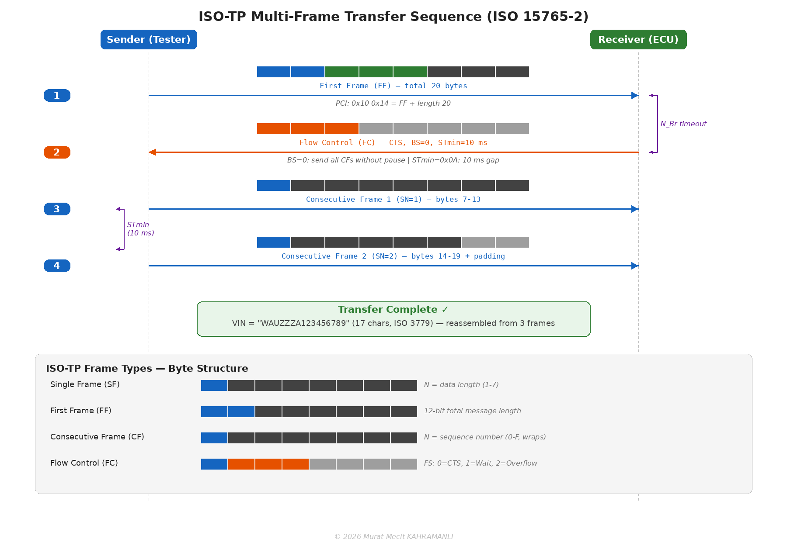
Block Size (BS): Number of consecutive frames the sender can transmit before waiting for the next FC. BS = 0 means no limit (send all CFs without pause).
STmin: Minimum separation time between consecutive frames. Values 0x00–0x7F represent 0–127 ms; values 0xF1–0xF9 represent 100–900 μs. STmin = 0 means send as fast as possible.
Flow Status (FS): 0 = Continue To Send (CTS), 1 = Wait, 2 = Overflow (abort).
UDS Timing Parameters
ISO 14229 and ISO 15765-3 define strict timing constraints that govern UDS communication. Correct implementation of these timers is critical for reliable diagnostic behavior:
| Parameter | Description | Default Value | Extended Value |
|---|---|---|---|
| P2server | Maximum time for ECU to start a response after receiving a request | 50 ms | — |
| P2*server | Maximum time for ECU to start a response after sending NRC 0x78 (Response Pending) | 5000 ms | — |
| P2client | Tester timeout waiting for a response from ECU | 50 ms + tolerance | — |
| P2*client | Tester timeout after receiving NRC 0x78 | 5000 ms + tolerance | — |
| S3server | Session timeout — ECU reverts to Default Session if no request received | 5000 ms | — |
| S3client | Tester must send TesterPresent before this timer expires | < S3server (e.g., 4000 ms) | — |
When an ECU sends NRC 0x78 (Response Pending), the tester must reset its timeout to P2* and continue waiting — not retry. The ECU may send multiple NRC 0x78 responses before the final positive or negative response. Each NRC 0x78 resets the P2* timer. A common implementation error is to treat NRC 0x78 as a failure and retry the request, which causes duplicate requests and potential data corruption during flash programming.
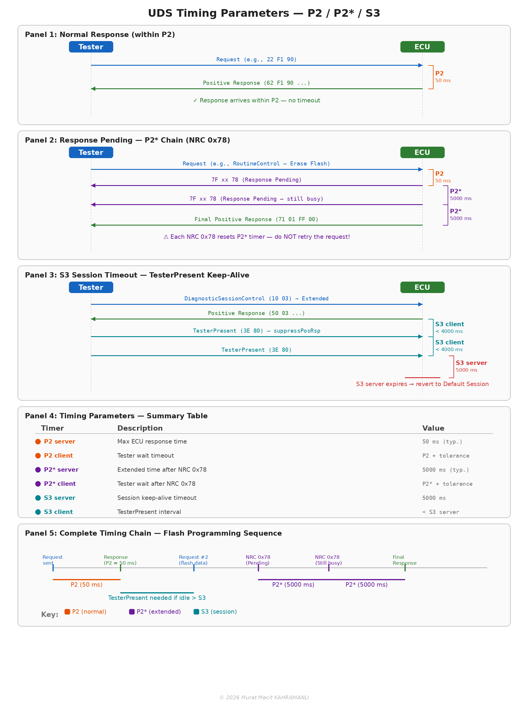
UDS Error Handling and Retry Strategy
Robust UDS implementations must distinguish between recoverable and non-recoverable errors. The retry behavior depends entirely on the Negative Response Code (NRC) received — or the absence of any response:
| Condition | NRC / Behavior | Tester Action | Max Attempts |
|---|---|---|---|
| No response (timeout) | P2 expires, no frame received | Retry the same request | 3 |
| Response Pending | 0x78 | Wait (reset timer to P2*), do NOT retry | N/A (wait until final response) |
| Busy — Repeat Request | 0x21 | Wait briefly, then retry | 3 |
| Conditions Not Correct | 0x22 | Check pre-conditions, fix, then retry | 1 (manual) |
| Service Not Supported | 0x11 | Abort — ECU does not support this service | 0 |
| Sub-function Not Supported | 0x12 | Abort — invalid sub-function | 0 |
| Security Access Denied | 0x33 | Abort — security locked, wait for delay timer | 0 |
| Invalid Key | 0x35 | Retry with correct key (decrement attempt counter) | Typically 3 before lockout |
| Request Sequence Error | 0x24 | Abort — restart sequence from beginning | 0 |
| General Reject | 0x10 | Abort — unrecoverable | 0 |
| Wrong Session | 0x7E (serviceNotSupportedInActiveSession) | Switch session first (0x10), then retry | 1 (after session change) |
UDS Retry Logic — Pseudocode:
function uds_request(service, data, max_retries=3):
for attempt in 1..max_retries:
send(service, data)
response = wait_response(timeout=P2)
if response == TIMEOUT:
continue // retry
if response == POSITIVE:
return response // success
nrc = response.nrc
if nrc == 0x78: // Response Pending
while True:
response = wait_response(timeout=P2_star)
if response != NRC_0x78:
return response // final answer
if nrc == 0x21: // Busy — Repeat Request
wait(100 ms)
continue // retry
if nrc in [0x10, 0x11, 0x12, 0x24, 0x33]:
return ERROR(nrc) // non-recoverable → abort
if nrc == 0x7E: // Wrong session
switch_session(required_session)
continue // retry once
return ERROR(MAX_RETRIES_EXCEEDED)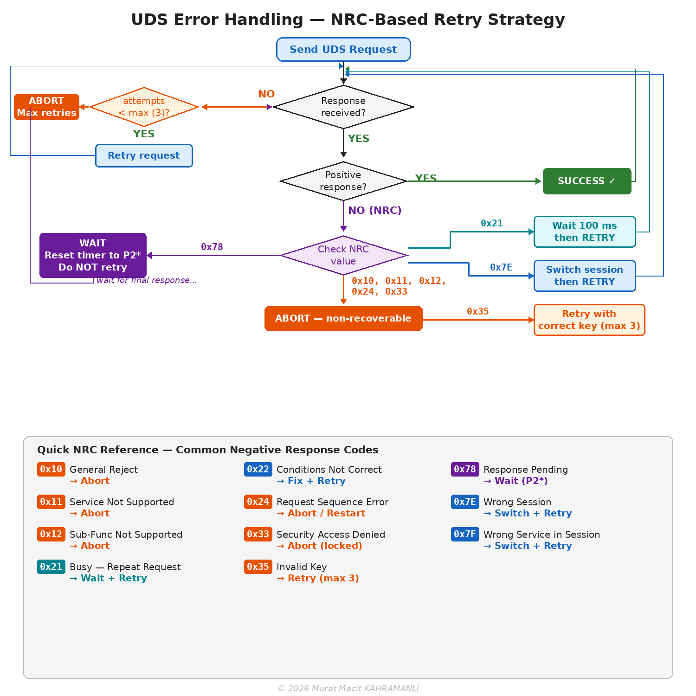
9.3 Protocol Comparison
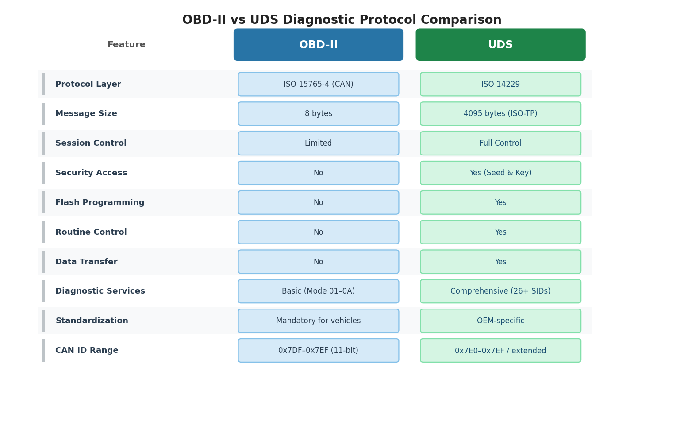
| Feature | OBD-II | UDS |
|---|---|---|
| Standard | SAE J1979, ISO 15031-5 | ISO 14229 |
| Mandatory | Yes (emissions-related) | No (manufacturer-specific) |
| Physical Layer | ISO 15765-4 (CAN), ISO 9141-2, SAE J1850 | CAN, LIN, FlexRay, Ethernet |
| Max Data Length | 7 bytes per frame (255 with TP) | 4095 bytes (ISO-TP) |
| Session Control | Limited | Full session management |
| Security Access | Not defined | Seed/Key authentication |
| Flash Programming | Not supported | Full support |
| Number of Services | 10 modes | 26+ services |
| Manufacturer Extensions | Limited | Extensive |
OBD-II is legally mandated for emissions-related diagnostics and must be supported by all vehicles sold in regulated markets. UDS is not mandated but has become the de facto standard for manufacturer-specific diagnostics and is required for vehicle type approval in Europe under the UNECE WP.29 regulations.
9.4 Diagnostic Protocol Standards — OSI Layer Mapping
All CAN-based diagnostic protocols share the same Physical (ISO 11898-2) and Data Link (ISO 11898-1) layers but diverge at higher OSI layers depending on the protocol family. The following diagram and table show how five major diagnostic standards map onto the 7-layer OSI model:
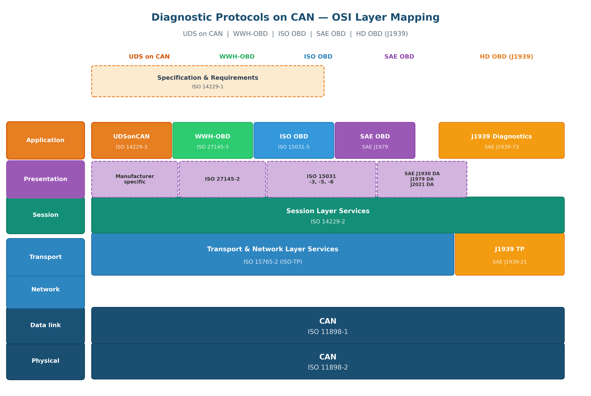
Key specification — ISO 14229-1 defines the common UDS service specification and requirements that sit above all application-layer variants. All five diagnostic families converge at ISO-TP (ISO 15765-2) for transport, except HD OBD (J1939) which uses its own transport protocol defined in SAE J1939-21.
OBD-II / EOBD (ISO 15031-5 / SAE J1979) is mandatory for emissions-related diagnostics — legally required for all vehicles. UDS (ISO 14229) handles everything else: manufacturer diagnostics, ECU programming, flash updates, calibration. In practice, modern vehicles support both simultaneously — OBD-II services mapped to UDS SIDs 0x01–0x0A and full UDS services via manufacturer-specific extended sessions.
9.5 OBDonUDS and WWH-OBD — Diagnostic Protocol Evolution
The automotive industry is transitioning from legacy OBD-II (SAE J1979 / ISO 15031-5) to UDS-based emissions diagnostics. Two parallel paths exist: OBDonUDS (SAE J1979-2) for the US market and WWH-OBD (ISO 27145) for the EU market. Both leverage UDS (ISO 14229) as their foundation, replacing the proprietary Mode/PID structure of legacy OBD-II with standard UDS services (ReadDataByIdentifier, ReadDTCInformation, etc.).
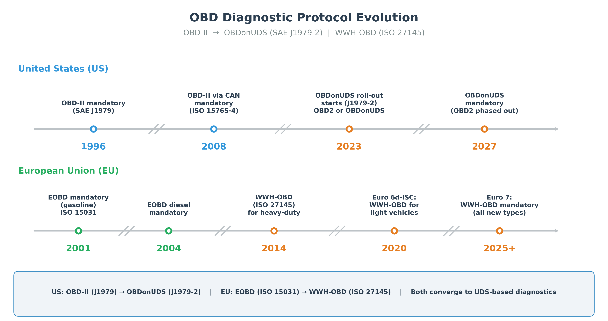
US Market: OBD-II → OBDonUDS (SAE J1979-2)
EU Market: EOBD → WWH-OBD (ISO 27145)
OBDonUDS vs WWH-OBD vs Legacy OBD-II Comparison
| Feature | OBD-II (Legacy) | OBDonUDS (J1979-2) | WWH-OBD (ISO 27145) |
|---|---|---|---|
| Region | US / EU (legacy) | United States | European Union |
| Application Standard | SAE J1979 / ISO 15031-5 | SAE J1979-2 | ISO 27145-3 |
| Base Protocol | Proprietary Mode/PID | UDS (ISO 14229) | UDS (ISO 14229) |
| Transport Layer | ISO 15765-4 | ISO 15765-2 | ISO 15765-2 |
| Data Access | Mode + PID (e.g., Mode 01, PID 0x0C) | UDS SID + DID (e.g., 0x22 + DID) | UDS SID + DID (e.g., 0x22 + DID) |
| DTC Access | Mode 03 (stored), Mode 07 (pending) | SID 0x19 (ReadDTCInformation) | SID 0x19 (ReadDTCInformation) |
| Session Management | Not defined | Full UDS session control | Full UDS session control |
| Physical Layer | CAN only (ISO 15765-4) | CAN, CAN FD, DoIP | CAN, CAN FD, DoIP |
| Backward Compatible | — | Yes (legacy scan tools supported) | Yes (legacy scan tools supported) |
Both OBDonUDS and WWH-OBD are built on UDS (ISO 14229), which means the automotive industry is converging to a single diagnostic framework. The key difference is the regulatory scope: OBDonUDS follows EPA/CARB regulations (US), while WWH-OBD follows UNECE WP.29 / Euro 7 regulations (EU). For engineers, this means UDS expertise covers both emissions and manufacturer diagnostics across all markets.
9.6 OBD-II Messaging Scenarios
OBD-II on CAN (ISO 15765-4) uses standardized 11-bit CAN message IDs. The diagnostic tester sends requests using either the functional address 0x7DF (broadcast to all ECUs) or physical addresses 0x7E0–0x7E7 (targeted to specific ECUs). Each ECU responds on its assigned response ID (0x7E8–0x7EF).
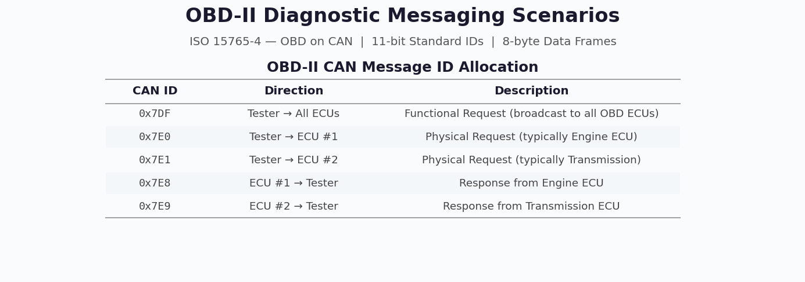
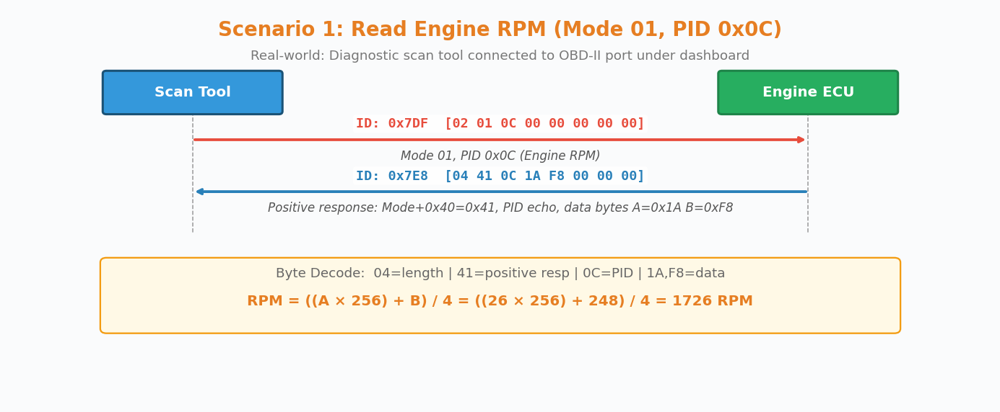
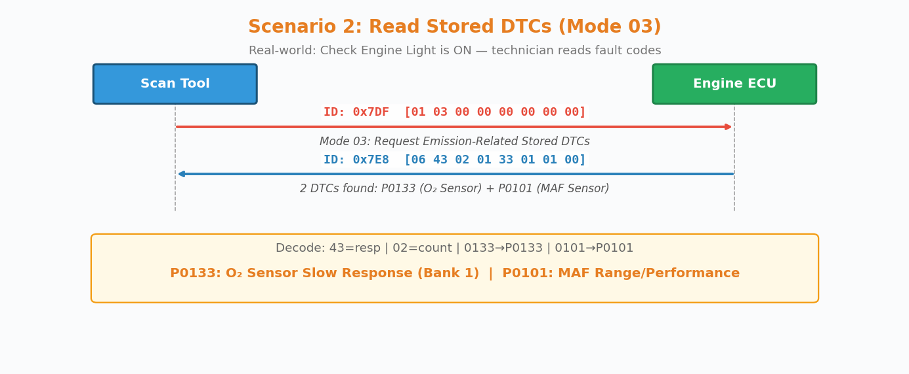


Real-World Example: Reading Engine RPM at a Workshop
A technician connects an OBD-II scan tool to the 16-pin DLC connector under the dashboard. The tool sends a Mode 01 request for PID 0x0C (Engine RPM):
Tester Request (CAN ID: 0x7DF):
[02] [01] [0C] [00] [00] [00] [00] [00]
| | |
| | └── PID: 0x0C (Engine RPM)
| └─────── Mode: 0x01 (Current Data)
└──────────── Data Length: 2 bytes
ECU Response (CAN ID: 0x7E8):
[04] [41] [0C] [1A] [F8] [00] [00] [00]
| | | | |
| | | └────┘── Data bytes A=0x1A, B=0xF8
| | └──────────── PID echo: 0x0C
| └───────────────── Positive response: 0x41 (Mode + 0x40)
└────────────────────── Data Length: 4 bytes
RPM Calculation: ((A × 256) + B) / 4 = ((26 × 256) + 248) / 4 = 1726 RPMReal-World Example: Reading Fault Codes After Check Engine Light
When the MIL (Check Engine Light) illuminates, a technician uses Mode 03 to retrieve stored DTCs:
Tester Request (CAN ID: 0x7DF):
[01] [03] [00] [00] [00] [00] [00] [00]
| └── Mode 03: Request Emission-Related DTCs
└─────── Length: 1 byte
ECU Response (CAN ID: 0x7E8):
[06] [43] [02] [01] [33] [01] [01] [00]
| | | | |
| | | └─────────┘── DTC 1: 0x0133 → P0133
| | └── DTC count: 2 │ DTC 2: 0x0101 → P0101
| └────── Positive response (Mode + 0x40)
└─────────── Length: 6 bytes
P0133 → O₂ Sensor Circuit Slow Response (Bank 1, Sensor 1)
P0101 → Mass Air Flow (MAF) Circuit Range/Performance9.7 J1939 OBD-II Diagnostics (Extended 29-bit IDs)
In heavy-duty vehicles (trucks, buses, construction equipment), diagnostics follow the SAE J1939-73 standard instead of ISO 15765-4. J1939 uses 29-bit extended CAN identifiers where the Parameter Group Number (PGN) is embedded directly in the CAN ID. Unlike standard OBD-II's request/response model, J1939 ECUs broadcast most parameters periodically (typically at 1 Hz), with specific diagnostic messages (DM1–DM4) carrying active and stored fault codes.
The 29-bit identifier encodes priority (3 bits), PGN/PDU format (18 bits), and source address (8 bits). For example, the Engine ECU (SA=0x00) broadcasting DM1 active DTCs uses CAN ID 0x18FECA00, where PGN 65226 = DM1. Fault codes use the SPN + FMI format (Suspect Parameter Number + Failure Mode Identifier) rather than the P/C/B/U DTC codes of standard OBD-II.


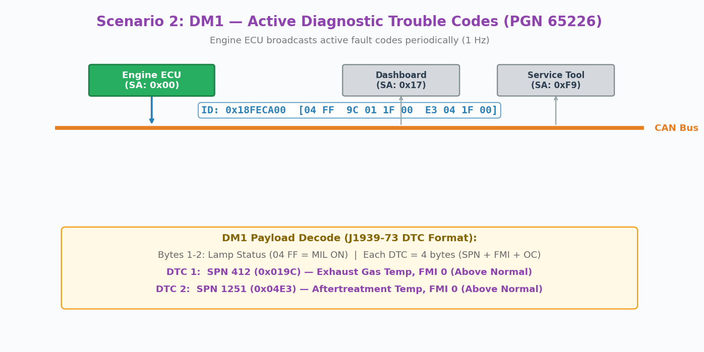
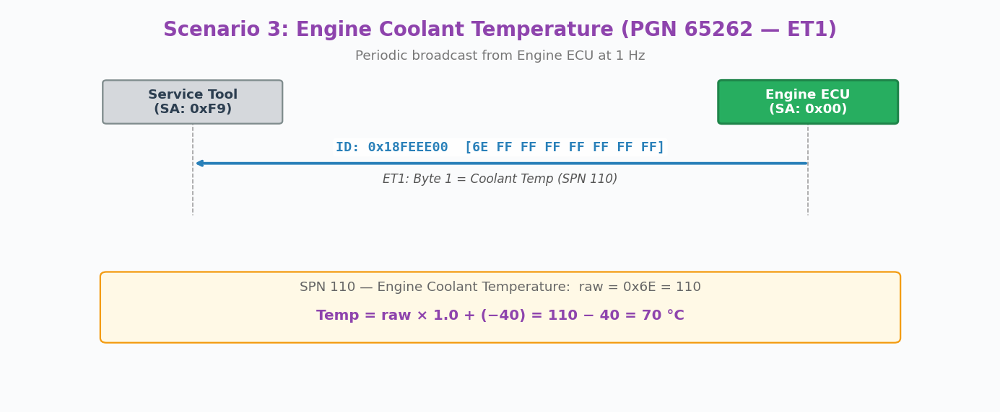
Key Differences: Standard OBD-II vs J1939 Diagnostics
| Feature | Standard OBD-II (ISO 15765-4) | J1939 Diagnostics (SAE J1939-73) |
|---|---|---|
| CAN ID Length | 11-bit standard | 29-bit extended |
| Addressing | Fixed IDs (0x7DF, 0x7E0–0x7EF) | PGN-based (embedded in 29-bit ID) |
| Communication Model | Request/Response | Periodic Broadcast + Request/Response |
| Fault Code Format | P/C/B/U DTCs (e.g., P0133) | SPN + FMI (e.g., SPN 412, FMI 0) |
| Vehicle Type | Passenger cars, light trucks | Heavy-duty trucks, buses, off-highway |
| Diagnostic Messages | Modes 01–0A | DM1–DM50+ (Diagnostic Messages) |
9.8 UDS Messaging Scenarios
UDS (ISO 14229) uses the same CAN ID range as OBD-II (0x7E0–0x7EF) but provides a far richer set of diagnostic services. UDS messages longer than 8 bytes are segmented using ISO-TP (ISO 15765-2) multi-frame transport protocol.


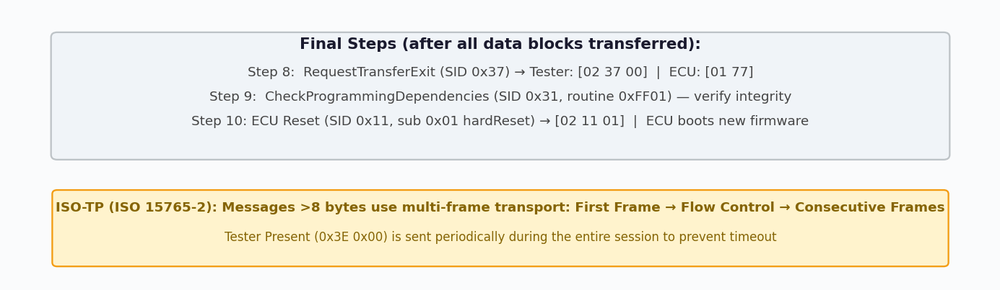
Real-World Example: ECU Firmware Update at Dealer Workshop
During an OEM recall campaign, the dealer workshop uses a VCI (Vehicle Communication Interface) to update the engine ECU firmware. The complete flash programming sequence follows these steps:
Step 1: Enter Extended Diagnostic Session
Tester → ECU (0x7E0): [02 10 03] DiagnosticSessionControl(ExtendedDiag)
ECU → Tester (0x7E8): [02 50 03] Positive Response
Step 2: Security Access — Request Seed
Tester → ECU (0x7E0): [02 27 05] SecurityAccess(Level 5 Seed Request)
ECU → Tester (0x7E8): [06 67 05 A3 B2 C1 D0] Seed = A3B2C1D0
Step 3: Security Access — Send Key
Tester → ECU (0x7E0): [06 27 06 7C 4D 3E 2F] Key = f(Seed, Secret)
ECU → Tester (0x7E8): [02 67 06] Security Unlocked ✓
Step 4: Enter Programming Session
Tester → ECU (0x7E0): [02 10 02] DiagnosticSessionControl(Programming)
ECU → Tester (0x7E8): [02 50 02] Positive Response
Step 5: Erase Flash Memory
Tester → ECU (0x7E0): [10 0B 31 01 FF 00 ...] RoutineControl(Erase)
ECU → Tester (0x7E8): [03 7F 31 78] NRC 0x78: Response Pending
ECU → Tester (0x7E8): [04 71 01 FF 00] Erase Complete ✓
Step 6: Request Download
Tester → ECU (0x7E0): [10 0B 34 00 44 ...] RequestDownload(addr, size)
ECU → Tester (0x7E8): [04 74 20 10 02] Max block = 4098 bytes
Step 7: Transfer Data (repeated for each block)
Tester → ECU (0x7E0): [10 xx 36 01 <data>] TransferData(block 1)
ECU → Tester (0x7E8): [02 76 01] Block Accepted
Step 8: Exit Transfer
Tester → ECU (0x7E0): [02 37 00] RequestTransferExit
ECU → Tester (0x7E8): [01 77] Exit OK
Step 9: Verify Programming
Tester → ECU (0x7E0): [06 31 01 FF 01 ...] RoutineControl(CheckDependencies)
ECU → Tester (0x7E8): [06 71 01 FF 01 00] Verification OK ✓
Step 10: ECU Hard Reset
Tester → ECU (0x7E0): [02 11 01] ECUReset(hardReset)
ECU → Tester (0x7E8): [02 51 01] ECU reboots with new firmwareDuring the entire programming sequence, the tester periodically sends 0x3E 0x00 (TesterPresent) to prevent the ECU from timing out and reverting to Default Session. The S3 timer is typically 5 seconds — if no diagnostic activity occurs within this period, the ECU automatically drops back to Default Session, aborting the programming process.
When the ECU needs more time to process a request (e.g., erasing flash memory), it responds with Negative Response Code 0x78 (Response Pending). The tester must wait for the final positive or negative response. The ECU may send multiple 0x78 responses before the operation completes.
Practical Debug Scenarios
The following real-world CAN log examples demonstrate common UDS communication patterns and error conditions encountered during diagnostic development and field debugging.
Scenario 1 — VIN Read via ISO-TP Multi-Frame
TX: 7E0 [03 22 F1 90 00 00 00 00] ReadDataByIdentifier(DID=0xF190)
RX: 7E8 [10 14 62 F1 90 57 41 55] First Frame: total 20 bytes
TX: 7E0 [30 00 00 00 00 00 00 00] Flow Control: BS=0, STmin=0 (send all)
RX: 7E8 [21 5A 5A 5A 31 32 33 34] CF SN=1: "ZZZA1234"
RX: 7E8 [22 35 36 37 38 39 00 00] CF SN=2: "56789"
Result: VIN = "WAUZZZA123456789" (17 characters, ISO 3779)Analysis: The response exceeds 7 bytes, so ISO-TP segments it across 3 frames. Byte 0x10 0x14 = First Frame with total length 20 bytes. The tester responds with Flow Control (BS=0 = no limit). Two Consecutive Frames complete the transfer.
Scenario 2 — Response Pending (NRC 0x78)
TX: 7E0 [10 0B 31 01 FF 00 ...] RoutineControl(Erase Flash)
RX: 7E8 [03 7F 31 78] NRC 0x78 — Response Pending
↳ Reset timer to P2* (5000 ms)
... (ECU erasing, 3.2 seconds later) ...
RX: 7E8 [03 7F 31 78] NRC 0x78 — Still processing
↳ Reset timer to P2* again
... (1.8 seconds later) ...
RX: 7E8 [04 71 01 FF 00] Positive Response — Erase Complete ✓Analysis: The ECU sends multiple NRC 0x78 while erasing flash. Each 0x78 resets the P2* timer. The tester must not retry — just wait.
Scenario 3 — Timeout (No Response)
TX: 7E0 [03 22 F1 90 00 00 00 00] ReadDataByIdentifier(VIN)
RX: --- (no response within P2=50 ms)
Retry 1:
TX: 7E0 [03 22 F1 90 00 00 00 00] Retry
RX: --- (no response)
Retry 2:
TX: 7E0 [03 22 F1 90 00 00 00 00] Retry
RX: --- (no response)
Result: FAIL — ECU unreachable after 3 attemptsRoot causes: ECU not powered, wrong CAN bus, incorrect baud rate, ECU in sleep mode, physical layer fault (broken termination, CAN_H/CAN_L short).
Scenario 4 — Wrong Session (NRC 0x7E)
TX: 7E0 [04 2E F1 90 41] WriteDataByIdentifier (in Default Session)
RX: 7E8 [03 7F 2E 7E] NRC 0x7E — serviceNotSupportedInActiveSession
Fix: Switch to Extended Diagnostic session first
TX: 7E0 [02 10 03] DiagnosticSessionControl(ExtendedDiag)
RX: 7E8 [06 50 03 00 19 01 F4] Positive: P2=25 ms, P2*=5000 ms
TX: 7E0 [04 2E F1 90 41] Retry WriteDataByIdentifier
RX: 7E8 [02 6E F1] Positive Response ✓Analysis: Many UDS services require Extended Diagnostic or Programming session. The positive response to 0x10 includes P2 and P2* timing values — the tester should update its timers accordingly.
Scenario 5 — Security Access Failure (NRC 0x35)
TX: 7E0 [02 27 01] SecurityAccess — Request Seed (Level 1)
RX: 7E8 [06 67 01 A3 B2 C1 D0] Seed = 0xA3B2C1D0
TX: 7E0 [06 27 02 FF FF FF FF] Send Key (WRONG key!)
RX: 7E8 [03 7F 27 35] NRC 0x35 — invalidKey
TX: 7E0 [02 27 01] Request new seed
RX: 7E8 [06 67 01 5E 7A 1C 9F] New seed (different each time)
TX: 7E0 [06 27 02 XX XX XX XX] Send correct key
RX: 7E8 [02 67 02] Access Granted ✓Analysis: After an invalid key, the ECU generates a new seed on the next request. After 3 consecutive failures, the ECU activates a delay timer (typically 10–60 s) before accepting further seed requests.
Scenario 6 — ISO-TP Flow Control Failure
TX: 7E0 [10 14 62 F1 90 57 41 55] ECU sends First Frame
RX: --- (tester fails to send Flow Control)
Result: Transfer aborted — ECU timeout on FC
No Consecutive Frames are sentRoot causes: Tester software bug (FC not implemented), CAN bus congestion preventing FC transmission, receive buffer overflow at tester side.
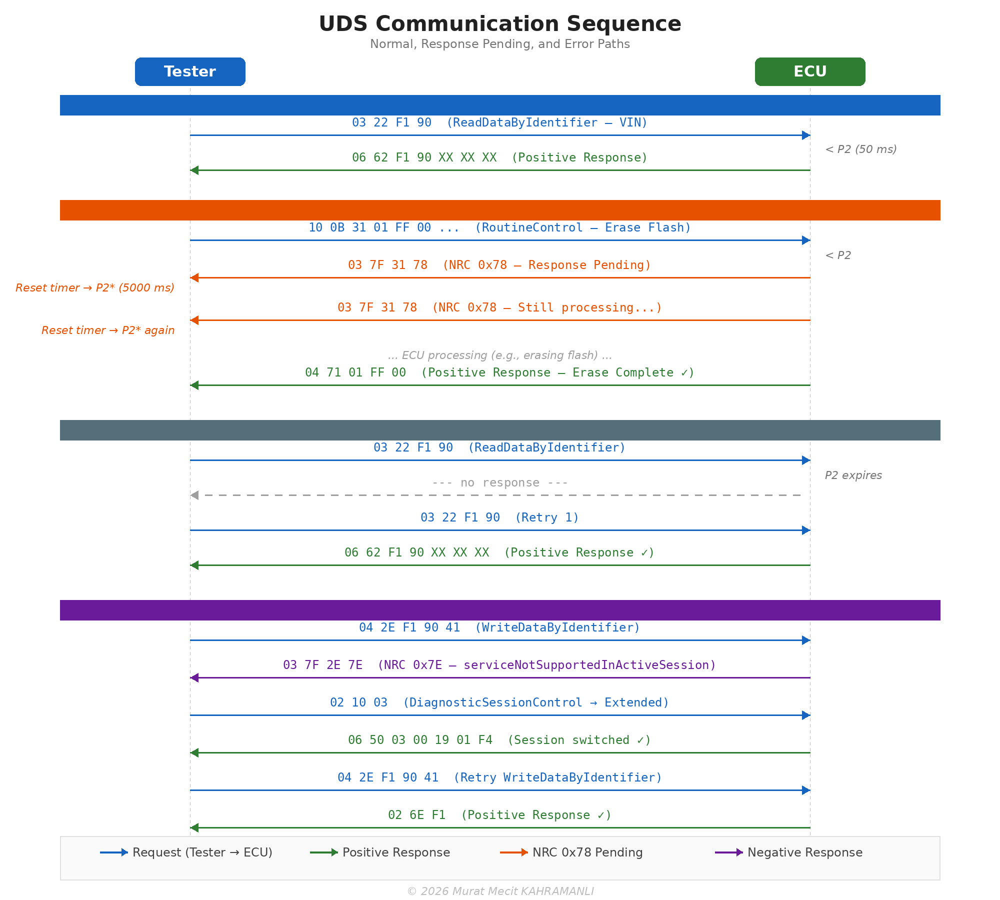
9.9 UDS Services
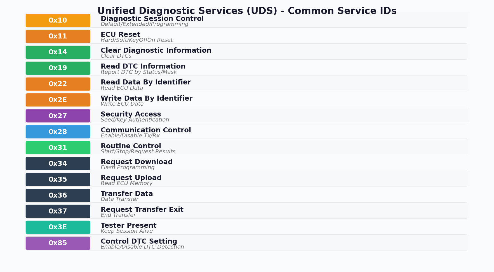
UDS services are identified by a 1-byte Service Identifier (SID), as shown in Figure 9-20.
UDS Request/Response Format
Request Format:
[SID] [Sub-function/Data] [...]
Positive Response:
[SID + 0x40] [Sub-function/Data] [...]
Negative Response:
0x7F [SID] [Response Code]Common Negative Response Codes
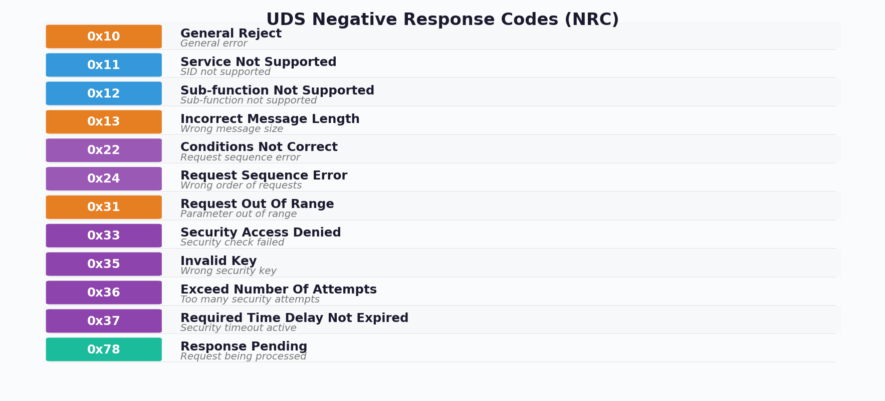
9.10 Session Control
UDS defines multiple diagnostic sessions that control the level of access to ECU services:
| Session | ID | Description | Timeout |
|---|---|---|---|
| Default Session | 0x01 | Normal operation, limited services | N/A |
| Programming Session | 0x02 | Software download/upload | 5s |
| Extended Diagnostic | 0x03 | Full diagnostic access | 5s |
| Safety System Diagnostic | 0x04 | Airbag, ABS diagnostics | 5s |
Session Transition Diagram:
- Default Session → (0x10 0x02) → Programming Session
- Default Session → (0x10 0x03) → Extended Diagnostic
- Programming Session → (0x10 0x01) → Default Session
- Extended Diagnostic → (0x10 0x01) → Default Session
- Any Session → (Timeout) → Default Session
Session Timeout (S3)
Diagnostic sessions (except Default) have a timeout period. If no diagnostic activity occurs within this period, the ECU automatically returns to Default Session.
S3 Timeout: Typically 5000 ms (5 seconds)
Tester Present (0x3E): Used to keep session alive9.11 Security Access
Security Access (SID 0x27) protects sensitive ECU functions from unauthorized access. The seed/key authentication mechanism ensures only authorized diagnostic tools can perform critical operations.
Security Access Sequence
Step 1: Request Seed
Tester -> ECU: 0x27 0x01 (Request Seed, Security Level 1)
ECU -> Tester: 0x67 0x01 [Seed 4 bytes]
Step 2: Send Key
Tester -> ECU: 0x27 0x02 [Key 4 bytes]
ECU -> Tester: 0x67 0x02 (Positive Response)
If Key Invalid:
ECU -> Tester: 0x7F 0x27 0x35 (Invalid Key)Where f() is a manufacturer-specific algorithm (typically AES, RSA, or proprietary)
| Level | Sub-function | Access |
|---|---|---|
| Level 1 | 0x01 (Seed), 0x02 (Key) | Standard diagnostic functions |
| Level 3 | 0x03 (Seed), 0x04 (Key) | Extended diagnostic functions |
| Level 5 | 0x05 (Seed), 0x06 (Key) | Flash programming |
| Level 7 | 0x07 (Seed), 0x08 (Key) | Development/Engineering |
After a configurable number of failed security access attempts (typically 3), the ECU enters a lockout state. The delay timer (typically 10-60 seconds) must expire before further attempts are allowed. This prevents brute-force attacks on the security mechanism.
Chapter 10: CAN FD and CAN XL Evolution
As automotive systems generate increasing amounts of data, Classical CAN's limitations of 1 Mbps and 8-byte payloads became restrictive. CAN FD (Flexible Data-rate) and CAN XL address these limitations while maintaining compatibility with the CAN protocol.
10.1 CAN FD Features
CAN FD, introduced by Bosch in 2012 and standardized in ISO 11898-1:2015, provides two major improvements over Classical CAN:
- Higher Data Rates: Up to 8 Mbps in the data phase (arbitration remains at 1 Mbps)
- Larger Payloads: Up to 64 bytes of data per frame
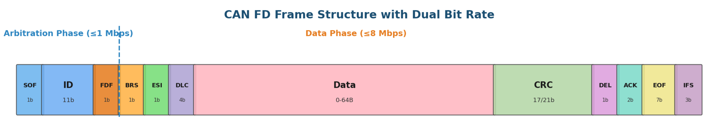
CAN FD Frame Differences
| Feature | Classical CAN | CAN FD |
|---|---|---|
| Data Length | 0-8 bytes | 0-8, 12, 16, 20, 24, 32, 48, 64 bytes |
| Arbitration Bit Rate | Up to 1 Mbps | Up to 1 Mbps |
| Data Bit Rate | Same as arbitration | Up to 8 Mbps |
| FDF Bit | Reserved (dominant) | FD Format (recessive) |
| BRS Bit | Not present | Bit Rate Switch |
| ESI Bit | Reserved (dominant) | Error State Indicator |
| CRC Length | 15 bits | 17 bits (≤16 bytes) or 21 bits (>16 bytes) |
| Stuff Bits in CRC | Fixed form | Dynamic (stuff count + parity) |
CAN FD DLC Encoding
| DLC | Classical CAN Data Bytes | CAN FD Data Bytes |
|---|---|---|
| 0-8 | 0-8 | 0-8 |
| 9 | 8 | 12 |
| 10 | 8 | 16 |
| 11 | 8 | 20 |
| 12 | 8 | 24 |
| 13 | 8 | 32 |
| 14 | 8 | 48 |
| 15 | 8 | 64 |
CAN FD Overhead and Data Efficiency
A significant advantage of CAN FD is improved protocol efficiency. In Classical CAN, the overhead (SOF, arbitration, control, CRC, ACK, EOF, IFS) consumes a large percentage of each frame, especially for small payloads. CAN FD dramatically improves the data-to-overhead ratio by supporting larger payloads at higher data rates:
| Payload (bytes) | Classical CAN Efficiency | CAN FD Efficiency | Throughput Gain |
|---|---|---|---|
| 8 | ~47% (8 / ~17 bytes total) | ~53% (+ BRS speedup) | Up to 3.5× |
| 12 | N/A (max 8 in CAN) | ~60% | — |
| 32 | N/A | ~80% | — |
| 64 | N/A | ~91% | Up to 8× |
The greatest throughput improvement occurs when using the Bit Rate Switch (BRS). With BRS active and a 2 Mbps data phase (vs 500 kbps arbitration), a 64-byte CAN FD frame achieves approximately 8× the effective throughput of a Classical CAN frame carrying 8 bytes. Even without BRS, the larger payload alone reduces the number of frames needed — e.g., transmitting 64 bytes requires 1 CAN FD frame vs. 8 Classical CAN frames, reducing arbitration overhead by ~87%.
10.2 CAN XL Features
CAN XL (Extra Long), standardized in CiA 610-1, further extends CAN capabilities to meet the demands of modern automotive networks:
- Data Length: Up to 2048 bytes per frame
- Data Rate: Up to 10 Mbps or higher
- SDU Type Field: Indicates the type of data carried (IP, J1939, etc.)
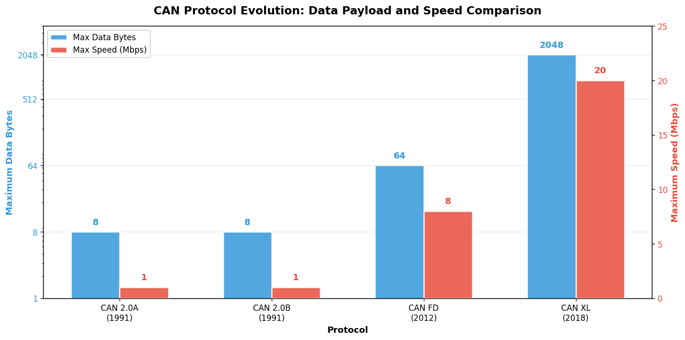
CAN XL Frame Structure
CAN XL introduces several new fields:
- XLF (CAN XL Format): Distinguishes CAN XL from CAN FD
- SEC (Simple Extended Content): Indicates SDU type field presence
- SDT (SDU Type): Identifies the service data unit type
- SBC (Stuff Bit Count): Extended stuff bit counter
- VCID (Virtual CAN ID): For network virtualization
CAN XL and IP Cooperation
A key design goal of CAN XL is native support for Internet Protocol (IP) communication. With payloads up to 2048 bytes and the SDU Type field, CAN XL frames can directly carry Ethernet/IP packets without fragmentation in many use cases. This enables:
- TCP/IP over CAN XL: Small TCP/IP packets can be tunneled directly within CAN XL data frames, enabling IP-based diagnostics and over-the-air updates via the CAN XL backbone
- Multi-Protocol Bridging: The SDU Type field allows a single CAN XL network to carry mixed traffic — J1939 PGNs, CANopen objects, and IP packets simultaneously, identified by different SDT values
- Gateway Simplification: CAN XL to Ethernet gateways become simpler since the SDU type explicitly identifies the payload format, avoiding complex protocol detection heuristics
SIC Transceiver (Signal Improvement Capability)
CAN XL requires a new generation of transceivers known as SIC transceivers (ISO 11898-2:2024). SIC transceivers actively improve the signal quality on the bus through:
- Edge Symmetry Enhancement: Active equalization of rising and falling edges reduces asymmetry that causes bit timing errors at high data rates
- Ringing Suppression: Active damping of bus ringing after recessive-to-dominant transitions enables shorter bit times
- Backward Compatibility: SIC transceivers are fully backward compatible with CAN 2.0 and CAN FD nodes. A bus segment can mix SIC and non-SIC transceivers, though the full 10 Mbps data rate requires all nodes to use SIC
CAN / CAN FD / CAN XL Compatibility
The three CAN generations are designed for incremental deployment. Key compatibility rules:
- CAN FD nodes can coexist with classical CAN nodes only if CAN FD tolerant transceivers are used, or if separate bus segments are connected via gateways
- CAN XL nodes are backward compatible with CAN FD, and can send/receive CAN FD frames natively. CAN XL controllers include a full CAN FD implementation
- Mixed CAN XL + CAN FD networks operate in "compatibility mode" where CAN XL nodes fall back to CAN FD data rates for shared frames, but can use 10 Mbps for CAN XL-only frames
- SIC transceivers improve signal quality for all frame types (classical CAN, CAN FD, and CAN XL) on the bus, even when connected to non-SIC nodes
Higher Layer Protocol Support
CAN XL's SDU Type field enables standardized identification of which higher-layer protocol the frame carries. Currently defined SDU types include:
| SDT Value | Protocol | Description |
|---|---|---|
| 0x01 | Classical Content | Content compatible with CAN / CAN FD interpretation |
| 0x03 | CANopen | CANopen XL frames (CiA 1301+) |
| 0x05 | J1939 | J1939 parameter groups in CAN XL frames |
| 0x07 | IEEE 802.3 (Ethernet) | Ethernet frames tunneled in CAN XL |
| 0x09 | IPv4 / IPv6 | IP packets directly encapsulated in CAN XL |
| Feature | CAN 2.0 | CAN FD | CAN XL |
|---|---|---|---|
| Max Data Bytes | 8 | 64 | 2048 |
| Max Bit Rate | 1 Mbps | 8 Mbps (data) | 10+ Mbps |
| Identifier Length | 11/29 bit | 11/29 bit | 11/29 bit |
| Standard | ISO 11898 | ISO 11898-1:2015 | CiA 610-1 |
| Backward Compatible | N/A | Yes (CAN 2.0) | Yes (CAN FD) |
| Transceiver | ISO 11898-2 | ISO 11898-2:2016 | ISO 11898-2:2024 |
10.3 Migration Considerations
When migrating from Classical CAN to CAN FD or CAN XL, several factors must be considered:
Hardware Requirements
- CAN Controller: Must support CAN FD/CAN XL
- Transceiver: Must support higher bit rates
- Clock: Higher accuracy required (typically 40 MHz or 80 MHz)
Network Design
- Bus Length: Shorter maximum lengths at higher bit rates
- Topology: More critical at higher speeds
- Termination: May require active termination for CAN XL
In a mixed network with Classical CAN and CAN FD nodes, CAN FD frames will be detected as errors by Classical CAN nodes. Use CAN FD tolerant transceivers (like TJA1043) that can ignore CAN FD frames, or implement gateway nodes to separate network segments.
Software Migration
// Classical CAN Frame
struct CanFrame {
uint32_t id; // 11 or 29 bit
uint8_t dlc; // 0-8
uint8_t data[8];
};
// CAN FD Frame
struct CanFdFrame {
uint32_t id; // 11 or 29 bit
uint8_t dlc; // 0-15 (maps to 0-64 bytes)
uint8_t data[64];
bool brs; // Bit Rate Switch
bool esi; // Error State Indicator
};Chapter 11: EMC Testing and Harness Design
Electromagnetic Compatibility (EMC) is critical for CAN bus systems in automotive environments. Vehicles contain numerous sources of electromagnetic interference, and CAN networks must operate reliably in these harsh conditions.
11.1 ISO 11452 Testing
ISO 11452 specifies test methods for evaluating the immunity of electronic components in vehicles to electromagnetic disturbances. These tests ensure CAN systems can withstand radiated electromagnetic fields.

ISO 11452-2 (Radiated Immunity)
This test subjects the device under test (DUT) to electromagnetic fields in an anechoic chamber:
| Level | Field Strength | Application |
|---|---|---|
| I | 25 V/m | General passenger vehicles |
| II | 50 V/m | Commercial vehicles |
| III | 75 V/m | Severe environments |
| IV | 100 V/m | Extreme environments, military |
ISO 11452-4 (Bulk Current Injection)
BCI testing injects RF currents directly into the wiring harness:
| Level | Current | Frequency Range |
|---|---|---|
| I | 25 mA | 1-400 MHz |
| II | 50 mA | 1-400 MHz |
| III | 75 mA | 1-400 MHz |
| IV | 100 mA | 1-400 MHz |
11.2 ISO 7637 Transients
ISO 7637-2 specifies test pulses that simulate transient disturbances occurring in vehicle electrical systems. These transients can cause communication errors or permanent damage if not properly protected.
ISO 7637-2 Test Pulses
| Pulse | Description | Amplitude | Source |
|---|---|---|---|
| 1 | Negative transient from inductive load disconnection | -100V to -600V | Disconnection of inductive loads |
| 2a | Positive transient from inductive load switching | +50V to +100V | Parallel inductive loads |
| 2b | DC motor transient during de-energization | +10V to +50V | DC motor stopping |
| 3a | Negative fast transients (burst) | -100V to -200V | Switching processes |
| 3b | Positive fast transients (burst) | +75V to +150V | Switching processes |
| 4 | Voltage drop during engine start | -6V to -12V | Starter motor engagement |
| 5 | Load dump (alternator disconnection) | +65V to +200V | Alternator load dump |
Pulse 5 (Load Dump) is the most severe transient, occurring when the battery is disconnected while the alternator is charging. Modern vehicles use centralized load dump suppression (CLDS), but CAN transceivers must still withstand these transients. Use transceivers with built-in load dump protection (e.g., TJA1057 with 58V rating).
11.3 Harness Design Guidelines
Proper harness design is essential for EMC performance and signal integrity. Following best practices during design and installation can prevent many CAN communication issues. This section covers stub connections, common mistakes, and design anti-patterns to avoid.
Stub Connection Design
Stubs are the connections from the main bus to individual ECUs. The stub length and connection method directly impact signal quality. At higher data rates, stub length becomes increasingly critical.

Stub Length Guidelines
The maximum allowable stub length depends on the data rate. As data rate increases, stub length must decrease to prevent signal reflections.
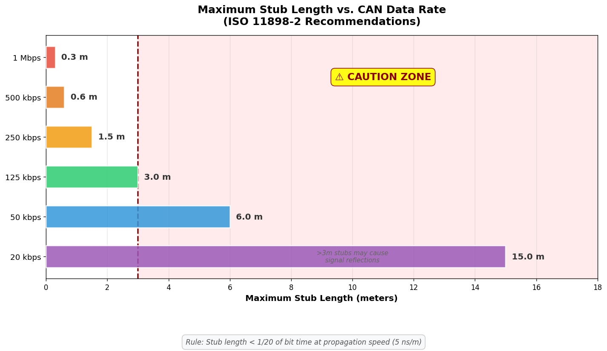
Where tbit is the bit time and vprop is the signal propagation velocity in the cable (typically 5 ns/m for twisted pair)
| Data Rate | Bit Time | Max Stub Length | Status |
|---|---|---|---|
| 1 Mbps | 1 μs | 0.3 m | Critical |
| 500 kbps | 2 μs | 0.6 m | Critical |
| 250 kbps | 4 μs | 1.5 m | Moderate |
| 125 kbps | 8 μs | 3.0 m | Relaxed |
| 50 kbps | 20 μs | 6.0 m | Flexible |
At 1 Mbps, a stub longer than 0.3 meters creates significant signal reflections that can cause bit errors. For CAN FD at 5 Mbps data phase, stub length should be limited to 0.1 meters or less. Always measure and verify stub lengths during installation.
Common Design Mistakes (Anti-Patterns)
The following diagrams illustrate common mistakes in CAN harness design that lead to communication problems:
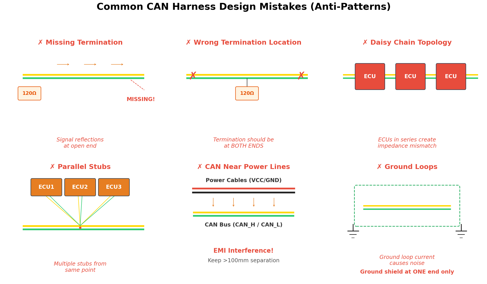
Anti-Pattern 1: Missing Termination
Missing or incorrect termination is the most common cause of CAN bus problems. Without proper termination at both ends of the bus, signals reflect back and create standing waves.
Always verify termination resistance with a multimeter (power off). Measure between CAN_H and CAN_L at any point on the bus. The reading should be approximately 60Ω (two 120Ω resistors in parallel). Readings significantly different from 60Ω indicate a termination problem.
Anti-Pattern 2: Star Topology
Star topology, where multiple stubs connect to a central point, creates multiple reflection points. Each branch of the star acts as an impedance discontinuity, causing signal degradation.
Low-speed CAN (ISO 11898-3, fault-tolerant) supports star topology with specific transceivers. However, high-speed CAN (ISO 11898-2) must use linear bus topology only.
Anti-Pattern 3: Daisy Chain Through ECUs
Connecting ECUs in series (daisy chain) creates impedance mismatches at each node. The ECU's internal circuitry presents a non-120Ω load to the bus, disrupting signal integrity.
Anti-Pattern 4: Ground Loops
Grounding the cable shield at both ends creates a ground loop. Current flowing through the shield induces noise in the signal conductors through capacitive and inductive coupling.
Cable Routing Best Practices
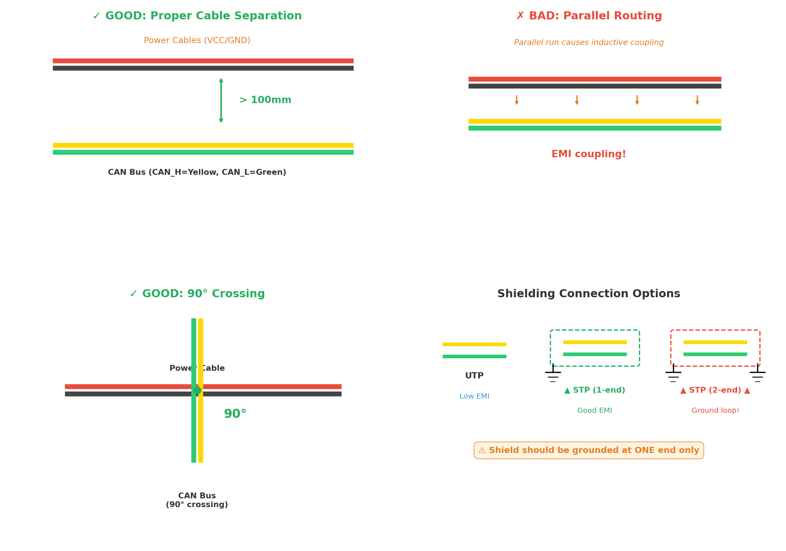
Separation from Power Lines
| Power Cable Type | Minimum Separation | Notes |
|---|---|---|
| Low current (< 5A) | 50 mm | General wiring |
| Medium current (5-20A) | 100 mm | Accessory circuits |
| High current (> 20A) | 200 mm | Starter, alternator |
| Ignition coils | 300 mm | High voltage pulses |
| RF antennas | 500 mm | Radio frequency |
Crossing Power Cables
When CAN cables must cross power cables, always cross at 90° angles. This minimizes the coupling area and reduces inductive interference. Never run CAN cables parallel to power cables for extended distances.
Shielding Options
| Type | Application | Effectiveness | Cost |
|---|---|---|---|
| Unshielded (UTP) | Controlled environments, low EMI | Basic | Low |
| Single shielded (STP) | General automotive | Good | Medium |
| Double shielded | High EMI environments | Excellent | High |
| Armored | Heavy machinery, extreme conditions | Maximum | Very High |
Shield Grounding
The shield should be grounded at one end only, typically at the diagnostic connector side. Grounding at both ends creates ground loops that can induce noise. The ungrounded end should be insulated to prevent accidental contact.
Connector Selection

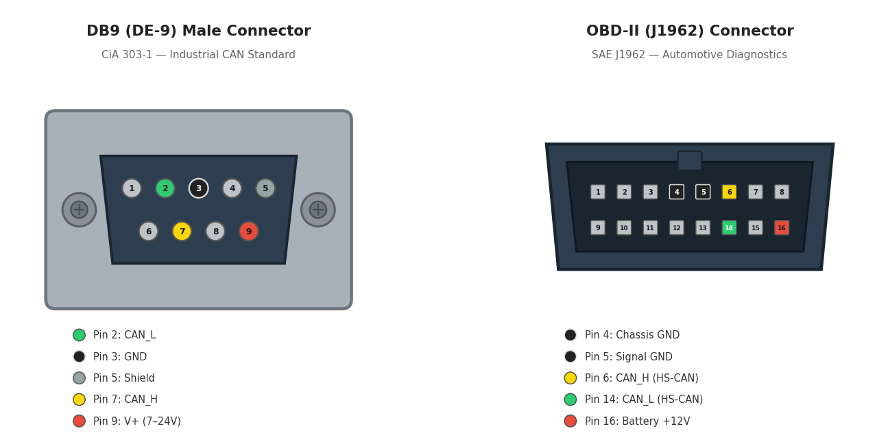
Connector Requirements
- Shield continuity: Use connectors that maintain 360° shield continuity
- Strain relief: Prevent cable damage from vibration and movement
- IP rating: Choose appropriate ingress protection for the environment
- Gold plating: Use gold-plated contacts for corrosion resistance
- Locking mechanism: Prevent accidental disconnection
Common Connector Types
| Connector | Application | Pins | Standard |
|---|---|---|---|
| DB9 (DE-9) | Industrial, diagnostic tools | 9 | CiA 303-1 |
| OBD-II (J1962) | Automotive diagnostics | 16 | SAE J1962 |
| M12 | Industrial automation | 5 | IEC 61076-2-101 |
| Deutsch DT | Heavy-duty vehicles | 2-12 | SAE J1939-13 |
| RJ45 | Ethernet-CAN gateways | 8 | IEC 60603-7 |
Signal Integrity Considerations

Common Mode Chokes
Common mode chokes can improve EMC performance by filtering common-mode noise while allowing differential signals to pass:
Common Mode Choke Specifications:
- Impedance: 100-1000 Ω at 100 MHz
- Current rating: 100-500 mA (match transceiver requirements)
- DC resistance: < 1 Ω (minimize voltage drop)
- Saturation current: > 2× operating current
Recommended Placement:
- Install near connector entries
- Place on both CAN_H and CAN_L lines
- Use bifilar wound chokes for best common-mode rejectionInstallation Checklist
Before applying power to a new CAN installation:
- Verify termination resistance: 60Ω ± 10Ω between CAN_H and CAN_L
- Check for shorts: No continuity between CAN_H/CAN_L and power/ground
- Verify stub lengths: All stubs within specification for data rate
- Inspect routing: Minimum 100mm from power cables
- Check shield grounding: Grounded at one end only
- Verify connector integrity: All pins properly seated
Always verify EMC performance through testing. Pre-compliance testing during development can identify issues early, reducing costly redesigns. Final validation should be performed at an accredited EMC test facility. Document all harness routing and maintain as-built drawings for future troubleshooting.
Chapter 12: Practical Implementation
Implementing a reliable CAN network requires careful consideration of system architecture, bus loading, and gateway design. This chapter provides practical guidance for real-world CAN system development.
12.1 System Architecture
Modern vehicles use multiple CAN buses organized by function and data rate requirements. A typical automotive network architecture includes:
| Bus | Data Rate | Connected Systems | Characteristics |
|---|---|---|---|
| Powertrain CAN | 500 kbps - 1 Mbps | Engine, Transmission, ABS | High priority, real-time |
| Body CAN | 125 kbps - 250 kbps | Doors, Windows, Lights, HVAC | Comfort features |
| Infotainment CAN | 125 kbps - 500 kbps | Radio, Navigation, Display | High data volume |
| Diagnostic CAN | 500 kbps | OBD-II, Service Tools | Standardized access |
| Chassis CAN | 250 kbps - 500 kbps | Suspension, Steering, Braking | Safety critical |
Typical Multi-Bus Architecture:
- Powertrain CAN (500 kbps) → Central Gateway
- Body CAN (125 kbps) → Central Gateway
- Infotainment CAN (250 kbps) → Central Gateway
- Chassis CAN (500 kbps) → Central Gateway
- Central Gateway → OBD-II Diagnostic Port
Gateway Design Considerations
The gateway node connects different CAN buses and manages message routing:
- Message filtering: Only forward relevant messages between buses
- Protocol translation: Convert between CAN 2.0 and CAN FD if needed
- Security: Implement firewall functions to isolate critical buses
- Diagnostics: Provide unified diagnostic access to all buses
12.2 Bus Loading Analysis
Bus loading is a critical parameter for CAN network design. Excessive loading can cause message delays and priority inversion issues.
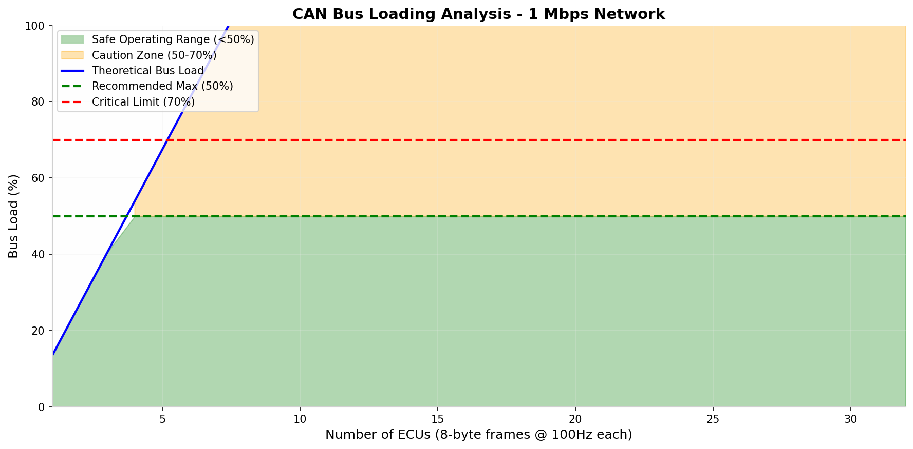
Example calculation for a 500 kbps bus:
Messages:
- Engine RPM: 130 bits × 100 Hz = 13,000 bits/s
- Vehicle Speed: 130 bits × 50 Hz = 6,500 bits/s
- Coolant Temp: 130 bits × 10 Hz = 1,300 bits/s
- (20 more messages at various rates)
Total: 180,000 bits/s
Bus Load: 180,000 / 500,000 = 36%| Bus Load | Status | Recommendation |
|---|---|---|
| < 30% | Excellent | Ample headroom for future expansion |
| 30-50% | Good | Normal operating range |
| 50-70% | Caution | Monitor for latency issues |
| 70-85% | Warning | Priority inversion risk, redesign recommended |
| > 85% | Critical | Network will experience significant delays |
At 50% bus load, a high-priority message may be delayed by one lower-priority frame. At 70% load, the delay can be several frames. Always perform worst-case response time analysis for safety-critical messages.
12.3 Gateway Design
The gateway is a critical component in multi-bus architectures. It must handle message routing, protocol conversion, and security functions.
Gateway Message Routing
// Example Gateway Routing Table
struct RoutingEntry {
uint32_t can_id; // Source CAN ID
uint8_t source_bus; // Source bus number
uint8_t target_bus; // Target bus number
uint32_t new_id; // Translated CAN ID (optional)
uint8_t priority; // Routing priority
};
RoutingEntry routing_table[] = {
// Route Engine RPM from Powertrain to Infotainment
{0x0CFFF048, POWERTRAIN_BUS, INFO_BUS, 0x0CFFF048, 5},
// Route Door Status from Body to Infotainment
{0x18FEF103, BODY_BUS, INFO_BUS, 0x18FEF103, 3},
// Route Diagnostic requests to all buses
{0x18EA00F9, DIAG_BUS, ALL_BUSES, 0x18EA00F9, 1},
};Gateway Performance Requirements
| Parameter | Typical | High Performance |
|---|---|---|
| Message Latency | < 5 ms | < 1 ms |
| Throughput | 2000 msg/s | 10000 msg/s |
| Routing Table Size | 256 entries | 1024 entries |
| Buffer Size | 64 messages | 256 messages |
| Protocol Conversion | CAN 2.0 ↔ CAN FD | CAN ↔ LIN ↔ FlexRay |
Modern gateways must implement cybersecurity measures including message authentication, intrusion detection, and secure firmware updates. The gateway serves as the primary security boundary between vehicle buses and external interfaces.
Chapter 13: Troubleshooting
CAN bus troubleshooting requires a systematic approach and appropriate diagnostic tools. This chapter covers common faults, diagnostic procedures, and best practices for maintaining reliable CAN communication.
13.1 Common Faults
CAN bus issues can be categorized into physical layer faults and protocol layer faults.
Physical Layer Faults
| Fault | Symptoms | Cause | Solution |
|---|---|---|---|
| Open Circuit | No communication, bus stuck recessive | Broken wire, loose connection | Repair wiring, check connectors |
| Short CAN_H to VBAT | Bus stuck dominant | Wiring damage | Isolate and repair short |
| Short CAN_L to GND | Bus stuck dominant | Wiring damage | Isolate and repair short |
| CAN_H/CAN_L Short | No differential signal | Wiring damage | Isolate and repair short |
| Missing Termination | Signal reflections, errors | Failed resistor, missing ECU | Check 60Ω between CAN_H/CAN_L |
| Incorrect Termination | Signal reflections | Wrong resistor value | Install correct 120Ω resistors |
| Ground Offset | Intermittent errors | Poor ground connection | Improve grounding |
Protocol Layer Faults
| Fault | Symptoms | Cause | Solution |
|---|---|---|---|
| Bit Timing Mismatch | Intermittent errors, Bus Off | Incorrect sample point | Verify bit timing configuration |
| Duplicate Node IDs | Address conflicts (J1939) | Configuration error | Assign unique addresses |
| High Bus Load | Message delays, lost frames | Too many messages | Optimize message rates |
| EMI Interference | Random errors | Poor cable routing | Improve shielding, routing |
| Faulty Transceiver | Single node causing errors | Hardware failure | Replace transceiver/ECU |
13.2 Diagnostic Tools
Effective CAN troubleshooting requires appropriate diagnostic tools:
Essential Tools
| Tool | Purpose | Typical Use |
|---|---|---|
| Digital Multimeter | Voltage, resistance measurements | Check termination, shorts |
| Oscilloscope | Signal waveform analysis | Verify signal quality, timing |
| CAN Analyzer | Protocol analysis | Message monitoring, error detection |
| Scan Tool | Vehicle diagnostics | Read DTCs, live data |
| Network Tester | Physical layer testing | Cable testing, signal integrity |
Voltage Measurements
Normal Bus Voltage Measurements:
CAN_H to Ground:
- Recessive: 2.5V ± 0.5V
- Dominant: 3.5V ± 0.5V
CAN_L to Ground:
- Recessive: 2.5V ± 0.5V
- Dominant: 1.5V ± 0.5V
CAN_H to CAN_L:
- Recessive: 0V ± 0.5V
- Dominant: 2.0V ± 0.5V
Termination Resistance (power off):
- CAN_H to CAN_L: 60Ω ± 5Ω (two 120Ω in parallel)Oscilloscope Analysis
Key waveform characteristics to verify:
- Differential voltage: Should be ~2V dominant, ~0V recessive
- Rise/fall times: Typically 20-50 ns for high-speed CAN
- Signal symmetry: CAN_H and CAN_L should be mirror images
- Noise: Minimal noise on both lines
Waveform → Fault Cheat Sheet
The following figure provides a visual reference for identifying CAN bus faults from oscilloscope waveforms. The top row shows healthy signal characteristics, while the bottom section maps common waveform anomalies to their root causes:
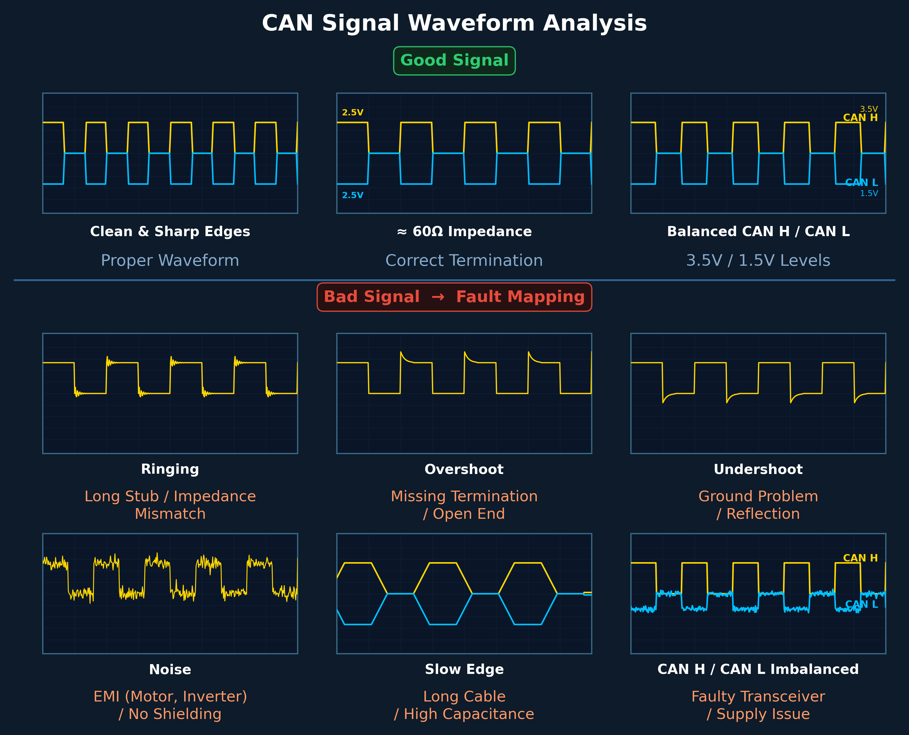
| Anomaly | Root Cause | Verification Steps | Solution |
|---|---|---|---|
| Ringing | Long stub, impedance mismatch, missing termination | Check stub length < 20 cm; verify 120Ω + 120Ω present | Shorten stubs, correct impedance, add missing termination |
| Overshoot | No termination, open end reflection | Measure CAN_H–CAN_L ≈ 60Ω | Install proper 120Ω termination resistors at both bus ends |
| Undershoot | Ground problem, signal reflection | Check GND continuity; verify ECU ground reference is common | Repair ground connections, ensure single-point grounding |
| Noise | EMI (motor, inverter), no shielding | Check cable shielding; measure proximity to power lines | Add shielded cable, reroute away from EMI sources, add common mode choke |
| Slow Edge | Long cable, excessive capacitance, too many nodes | Measure cable length; count nodes on bus | Reduce cable length, reduce node count, use higher quality cable |
| CAN H/L Imbalanced | Faulty transceiver, supply voltage issue | Compare CAN_H and CAN_L symmetry; check transceiver supply | Replace faulty transceiver/ECU, verify power supply |
13.3 Field Debug Procedure
A systematic 10-step field troubleshooting procedure that resolves approximately 90% of CAN bus problems:
Step-by-Step Debug Procedure
| Step | Action | Details | Expected Result |
|---|---|---|---|
| 1 | Multimeter — Resistance | Ignition OFF. Measure CAN_H ↔ CAN_L resistance. | ~60Ω = OK | ~120Ω = single termination | ~40Ω = extra termination | ∞ = broken wire |
| 2 | Physical Inspection | Verify: terminations at bus ends, stub lengths, twisted pair used, no splices | All connections secure, topology correct |
| 3 | Oscilloscope — Connect | Probe CAN_H and CAN_L (preferably differential measurement) | Clean square wave visible |
| 4 | Waveform Analysis | Compare waveform against cheat sheet (Figure 13-1) | Identify any anomalies: ringing, overshoot, noise, etc. |
| 5 | Speed Reduction Test | Reduce bus speed (e.g. 500 kbps → 250 kbps) | If errors disappear → confirmed physical layer problem |
| 6 | Node Isolation | Disconnect ECUs one by one | Identify which node is causing the problem |
| 7 | Stub Test | Disconnect long branch lines | Signal improves → stub is the problem |
| 8 | Termination Test | Remove one termination → observe; replace with precision resistor | Identify faulty or missing termination |
| 9 | EMI Test | Start motor, activate DC-DC converter, observe signal changes | Identify EMI-sensitive conditions |
| 10 | Transceiver Validation | Test with single ECU; compare against known-good ECU | Identify faulty transceiver |
If reducing the bus speed makes the problem disappear, it is 100% a physical layer issue. Do not look for software bugs.
Real Vehicle Problem Scenarios
| Scenario | Symptoms | Root Cause | Solution |
|---|---|---|---|
| CAN fails when engine starts | OK at ignition ON, CAN error/bus-off when engine running. Oscilloscope shows increased noise and distorted edges. | Alternator/inverter EMI, poor grounding | Use twisted pair + shield, fix GND reference, reroute cable away from power lines, add common mode choke |
| ECUs intermittently disappear | Random timeouts, DM1 messages come and go. Oscilloscope shows ringing + edge distortion. | Long stubs, star/T-branch topology | Shorten stubs to < 20 cm, convert star topology to linear bus |
| Errors only at high speed | 250 kbps OK, 500 kbps errors | Impedance mismatch, poor cable quality | Use proper 120Ω cable, verify termination, replace cable |
| No communication at all | CAN completely dead. Multimeter shows ∞Ω. | Broken wire, disconnected connector | Continuity test, check all connectors |
| Weak signal levels | CAN_H/CAN_L differential voltage too low | Triple termination (≈40Ω), excessive bus loading | Remove extra termination — keep only two 120Ω ends |
| Single ECU corrupts bus | Bus crashes when specific ECU is connected | Faulty transceiver, dominant-stuck output | Remove faulty ECU, replace transceiver |
Approximately 80% of CAN bus problems originate from the physical layer (wiring, termination, connectors) and only 20% from software or configuration issues. Always check the physical layer first.
CAN FD Debug Differences
CAN FD requires stricter physical layer tolerances due to higher data phase bit rates (2–5 Mbps). The same wiring faults that are tolerable at classical CAN speeds become critical at CAN FD data rates:
| Parameter | Classical CAN | CAN FD | Impact |
|---|---|---|---|
| Max Stub Length | < 30 cm | < 10 cm | Reflections at data phase speed cause bit errors |
| Ringing Tolerance | Moderate — can tolerate small reflections | Very low — even small reflections cause CRC errors | Stricter impedance matching required |
| Cable Quality | Standard cable acceptable | True 120Ω twisted pair mandatory | Impedance mismatch amplified at high frequency |
| Termination Precision | ±10% tolerance | ±5% or less recommended | Small deviations create visible reflections |
| Edge Timing | Soft edges acceptable | Sharp, clean edges required | Slope control and rise/fall time critical |
- Data Phase Crash: Arbitration phase works fine but data phase fails — caused by high-frequency physical layer faults
- CRC Error Spikes: Random CRC errors during data phase — caused by small reflections invisible at arbitration speed
- Bit Stuffing Errors: Edge distortion at data rate causes bit timing violations
CAN FD debugging approaches RF-level signal integrity analysis. Follow this sequence: (1) Test at low data rate first, (2) Test with only 2 nodes, (3) Cut all stubs, (4) Inspect edges with oscilloscope, (5) Replace cable if needed. For CAN FD systems, successful communication requires classical CAN rules applied more strictly — especially stub length, impedance matching, and signal integrity.
13.4 Best Practices
Following best practices during design, installation, and maintenance can prevent many CAN bus issues:
Design Best Practices
- Keep bus load below 50% for normal operation
- Use twisted pair cable with proper impedance
- Implement proper termination at both bus ends
- Minimize stub lengths (< 0.3m at 1 Mbps)
- Route CAN cables away from high-current power lines
- Use shielded cables in high-EMI environments
- Implement proper grounding (single point for shield)
Installation Best Practices
- Verify termination resistance before powering up
- Check for shorts between CAN_H, CAN_L, power, and ground
- Use proper connectors with strain relief
- Label all CAN cables clearly
- Document the network topology and node addresses
Maintenance Best Practices
- Monitor bus load and error counters regularly
- Log diagnostic trouble codes for trend analysis
- Perform periodic physical layer testing
- Update firmware to address known issues
- Maintain spare parts for critical components
When troubleshooting CAN issues, follow this systematic approach: (1) Verify physical connections and termination, (2) Check voltage levels with multimeter, (3) Analyze waveforms with oscilloscope, (4) Monitor messages with CAN analyzer, (5) Check error counters in ECUs, (6) Isolate nodes to identify faulty device.
Chapter 14: J1939 with CAN FD
SAE J1939-22 defines the adaptation of the J1939 protocol for CAN FD networks, enabling higher-layer protocol support while leveraging the increased bandwidth and payload of CAN FD. This chapter covers the Multi-PG mechanism, CAN FD Transport Protocol, and enhanced network management capabilities that J1939-22 introduces for modern heavy-duty vehicle networks.
14.1 Multi-PG and Contained PGs
Classical J1939 maps one Parameter Group (PG) per CAN frame. With CAN FD's 64-byte payload, J1939-22 introduces the Multi-PG concept, allowing multiple Parameter Groups to be packed into a single CAN FD frame. Each embedded PG is called a Contained PG (C-PG).
Multi-PG Frame Structure
A Multi-PG frame uses a dedicated PGN and packs one or more C-PGs sequentially into the data field. Each C-PG carries its own header that identifies the original PGN, enabling the receiver to demultiplex the contents.
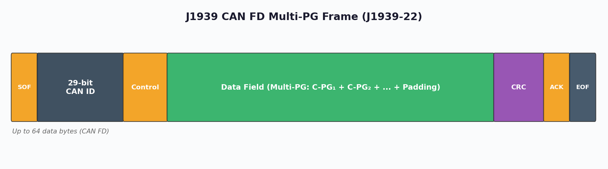
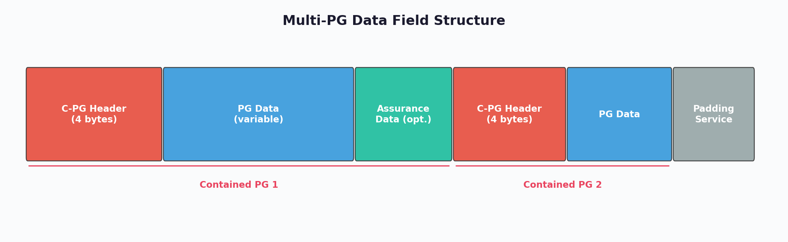
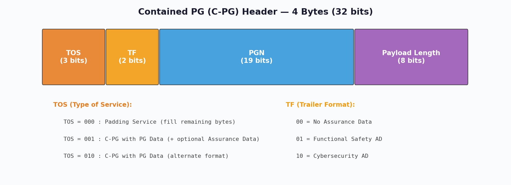
Contained PG Header Fields
| Field | Size | Description |
|---|---|---|
| Type of Service (TOS) | 4 bits | Priority and QoS parameters for the contained PG |
| Transmission Format (TF) | 4 bits | Indicates C-PG addressing mode (PDU1 or PDU2) |
| PGN | 18 bits | Parameter Group Number of the contained PG |
| Data Length | Variable | Length of the C-PG payload following the header |
Multi-PG significantly reduces bus overhead in CAN FD networks. By packing multiple small PGs (e.g., 2-byte sensor values) into a single 64-byte frame, the ratio of protocol overhead to useful data drops dramatically. For example, four 8-byte PGs sent individually require four CAN FD frames with arbitration, CRC, and interframe spacing overhead each. As a single Multi-PG frame, the same data needs only one set of overhead fields — a bandwidth saving of approximately 60%.
CAN FD Identifier Mapping
J1939-22 supports both 11-bit and 29-bit CAN identifiers. For the traditional 29-bit extended format, the mapping remains consistent with classical J1939, preserving backward compatibility for the arbitration phase:
| Bit Position | Field | Description |
|---|---|---|
| 28–26 | Priority | Message priority (0 = highest, 7 = lowest) |
| 25 | Reserved | Reserved for future use (set to 0) |
| 24 | Data Page | Extends PGN address space |
| 23–16 | PDU Format (PF) | Determines PDU1 (PF < 240) or PDU2 (PF ≥ 240) |
| 15–8 | PDU Specific (PS) | Destination Address (PDU1) or Group Extension (PDU2) |
| 7–0 | Source Address | Sending node's address (0–253) |
14.2 CAN FD Transport Protocol
J1939-22 defines a new FD Transport Protocol (FD.TP) optimized for CAN FD's larger frames. While classical J1939 TP (BAM/CMDT) is limited to 7 bytes per TP.DT frame, FD.TP leverages CAN FD payloads to transfer large data sets more efficiently.
FD Transport Protocol Messages
| Message | PGN | Description |
|---|---|---|
| FD.TP.CM | 0x1CEC | Connection Management — initiates and controls transfer sessions |
| FD.TP.DT | 0x1CEB | Data Transfer — carries payload segments up to 63 bytes each |
| FD.TP.EOMS | — | End of Message Session — confirms successful reception |
| FD.TP.Abort | — | Connection Abort — terminates session on error |
FD.TP vs Classical TP Performance
The performance advantage of FD.TP over classical TP is substantial due to the larger data segment size per frame:
| Parameter | Classical TP (J1939-21) | FD.TP (J1939-22) |
|---|---|---|
| Bytes per DT frame | 7 | Up to 63 |
| Maximum transfer size | 1785 bytes | > 100 kB (extended) |
| Frames for 1785 bytes | ~255 + CM | ~29 + CM |
| Session management | CTS/EOM handshake | Enhanced flow control with EOMS |
| Concurrent sessions | Limited | Multiple simultaneous sessions supported |
In gateways connecting classical J1939 (CAN 2.0B) segments with J1939-22 (CAN FD) segments, care must be taken to fragment Multi-PG frames back into individual PGs for the classical side. FD.TP sessions must be converted to classical BAM/CMDT sessions, adjusting timing parameters accordingly. This fragmentation introduces latency that must be accounted for in real-time control applications.
14.3 Network Management and Functional Safety
J1939 Network Management (J1939-81) provides address claiming and conflict resolution mechanisms essential for plug-and-play operation of ECUs on the bus. J1939-22 extends these capabilities for CAN FD networks while maintaining backward compatibility.
Address Claiming Protocol
Each J1939 node must claim a unique source address (0–253) on the network before transmitting. The Address Claimed message (PGN 0xEE00) carries the node's 64-bit NAME field, which serves as a globally unique identifier and determines priority during address conflicts.
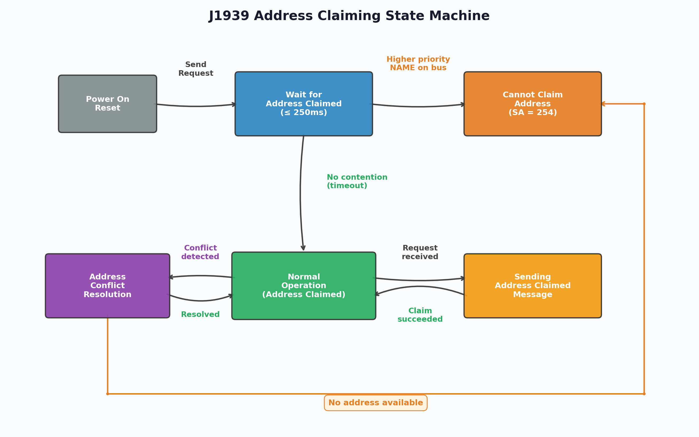
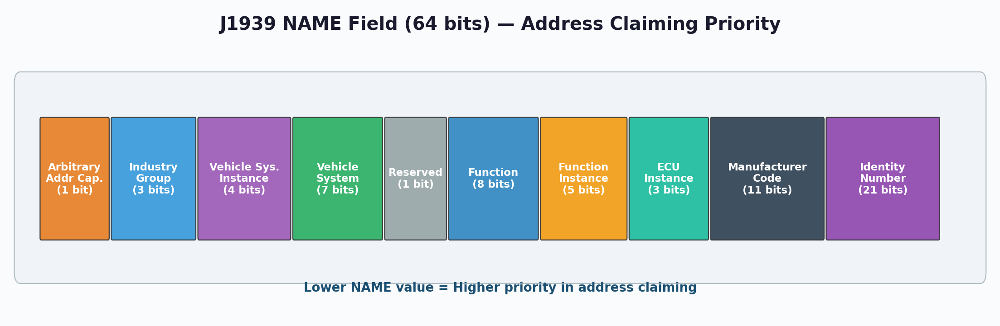
J1939 NAME Field Structure
| Bits | Field | Description |
|---|---|---|
| 63 | Arbitrary Address | 1 = node can negotiate address, 0 = fixed address |
| 62–59 | Industry Group | Application area (0 = Global, 1 = On-Highway, 2 = Agriculture, etc.) |
| 58–55 | Vehicle System Instance | Differentiates multiple identical systems |
| 54–48 | Vehicle System | Identifies the vehicle system (engine, transmission, etc.) |
| 47–40 | Function | Specific function of the ECU within the system |
| 39–35 | Function Instance | Instance of the function |
| 34–32 | ECU Instance | Instance of the ECU for this function |
| 31–21 | Manufacturer Code | SAE-assigned manufacturer identifier |
| 20–0 | Identity Number | Manufacturer-assigned unique serial number |
Conflict Resolution
When two nodes claim the same address, the NAME field values determine the winner. The node with the lower numeric NAME value wins the address. The losing node must either select an alternative address (if Arbitrary Address bit = 1) or go to the Cannot Claim Address state (sending PGN 0xEE00 with source address 254).
SAE J1939-17 specifies the physical layer for J1939 CAN FD networks. It defines dual bit rates: 500 kbit/s during the arbitration phase and 2 Mbit/s during the data phase. This conservative approach compared to CAN FD's theoretical maximum of 8 Mbps ensures reliable operation with existing J1939 wiring harnesses and connector systems in harsh commercial vehicle environments. The standard also addresses transceiver requirements, bus timing tolerances, and oscillator specifications for J1939 CAN FD nodes.
Functional Safety Considerations
Modern J1939 CAN FD implementations must address functional safety (ISO 26262) requirements. Key mechanisms include:
- Error State Indicator (ESI): CAN FD's ESI bit allows immediate detection of error-passive transmitters, improving fault containment
- CRC Improvements: CAN FD's 17/21-bit CRC with stuff-bit counting provides stronger error detection than classical CAN's 15-bit CRC
- End-to-End Protection: Application-level E2E protection (e.g., AUTOSAR E2E Profile 6) should supplement CAN FD's built-in error detection for safety-critical PGs
- Alive Counter: Monitoring message sequence numbers helps detect frozen or stale data from faulty ECUs
- Timeout Monitoring: Heartbeat-based supervision detects silent node failures within defined reaction time
14.4 J1939-76 Functional Safety Communication
SAE J1939-76 defines a safety communication layer on top of J1939 that ensures data integrity for safety-critical applications up to ASIL D (ISO 26262). The standard introduces a paired message mechanism using a Safety Header Message (SHM) and a Safety Data Message (SDM).
SHM/SDM Message Structure
For each safety-critical PGN, the producer transmits two consecutive messages: the SHM (containing integrity verification data) followed by the SDM (containing the actual safety payload). The consumer validates the SHM before accepting the SDM data.

SHM Field Descriptions
| Byte | Field | Description |
|---|---|---|
| 1 (bits 7-1) | SDG Sequence Number | Incrementing counter (0–127) per Safety Data Group, detects message loss or repetition |
| 1 (bit 0) | Reserved | Reserved for future use |
| 1 (IED bits) | Inverted Extended Data Page / Data Page | Inverted values of the SDM's DP and EDP fields for cross-verification |
| 2 | Inverted SDM Source Address | Bitwise inverse of the SDM's Source Address field |
| 3 | Inverted SDM PS Value | Bitwise inverse of the SDM's PDU Specific field |
| 4 | Inverted SDM PF Value | Bitwise inverse of the SDM's PDU Format field |
| 5-8 | Checksum | 32-bit CRC calculated over the SHM header and corresponding SDM data |
Safety Communication Timing
J1939-76 defines two critical timing parameters that the consumer monitors for each Safety Data Group (SDG):

| Parameter | Full Name | Description |
|---|---|---|
| SCT | Safety Communication Time | Maximum allowed time between two consecutive valid SHM/SDM pairs for the same PGN. If exceeded, the consumer enters a safe state. |
| SRVT | Safety-Related Valid Timeout | Maximum allowed time between the SHM and its corresponding SDM within a single safety data group. If exceeded, the data pair is discarded. |
The consumer must perform the following checks before accepting safety data: (1) verify the SDG Sequence Number has incremented correctly, (2) confirm the inverted identifier fields in the SHM match the SDM's actual identifier fields, (3) validate the 32-bit checksum against the received data, and (4) verify both SCT and SRVT timing constraints are met. If any check fails, the safety data is rejected and the application-defined fault reaction is triggered.
Chapter 15: CANopen Protocol
CANopen is a CAN-based application layer protocol standardized by CAN in Automation (CiA). Defined primarily in CiA 301, it provides a standardized communication framework widely used in industrial automation, medical devices, maritime systems, and embedded control. CANopen implements a device model, communication profiles, and configuration mechanisms that enable interoperable multi-vendor networks.
Standard History and Specification Documents
CANopen was originally developed by Bosch and published as a European standard (EN 50325-4). The CAN in Automation (CiA) international users' and manufacturers' group maintains and evolves the specification. Key specification documents include:
| Document | Title | Scope |
|---|---|---|
| CiA 301 (DS 301) | CANopen Application Layer | Core specification: Object Dictionary, NMT, SDO, PDO, communication model |
| CiA 302 (DS 302) | Additional Application Layer Functions | NMT master features, flying master, boot-up, configuration management |
| CiA 303-3 (DR 303-3) | Indicator Specification | LED behavior for CAN and device status indication (green/red patterns) |
| CiA 305 | Layer Setting Services (LSS) | Node-ID and baud rate assignment via CAN without pre-configuration |
| CiA 306 | Electronic Data Sheet (EDS) | Machine-readable device description format for configuration tools |
| CiA 4xx | Device Profiles | Domain-specific profiles (401: I/O, 402: Drives, 404: Measuring, etc.) |
| CiA 1301 | CANopen FD | Extension for CAN FD networks: 64-byte PDO/SDO, enhanced MPDO |
Network Structure
A CANopen network follows a master/slave architecture coordinated by the Network Management (NMT) protocol. One node acts as the NMT Master (typically the PLC or central controller), managing the lifecycle and state transitions of all other nodes on the bus. Key characteristics include:
- Node-ID Assignment: Each device on the network is assigned a unique Node-ID (1–127). Node-ID 0 is reserved for NMT broadcast commands. The Node-ID determines all default COB-IDs for that device's communication objects.
- NMT State Machine: Every node follows a defined state machine: Initialization → Pre-Operational → Operational → Stopped. The NMT Master controls transitions via NMT commands (Start, Stop, Pre-Operational, Reset Node, Reset Communication).
- Heartbeat / Node Guarding: Network health is monitored through either Heartbeat (preferred, producer-driven) or Node Guarding (legacy, master-polled). Heartbeat messages are transmitted at configurable intervals by each node, allowing the NMT Master and consumers to detect node failures.
- Boot-Up Message: When a node completes initialization, it broadcasts a boot-up message (COB-ID = 0x700 + Node-ID) to announce its presence on the network.

Device Model
Every CANopen device implements a standardized internal structure defined by CiA 301. The device model consists of three interconnected components: the Communication unit (protocol stack), the Object Dictionary (central data repository), and the Application (device-specific functions).
- Communication Unit: Handles all CAN bus interactions including PDO (Process Data Object) exchange for real-time data, SDO (Service Data Object) transfers for configuration and parameterization, NMT state management, SYNC synchronization, EMCY emergency messages, and TIME timestamp distribution.
- Object Dictionary (OD): The central data structure of every CANopen device — an ordered table of 16-bit index entries (0x0000–0xFFFF), each with optional 8-bit sub-indices. The OD contains all communication parameters, device profile entries, and manufacturer-specific data. Indices 0x1000–0x1FFF hold communication profile entries; 0x6000–0x9FFF hold device profile entries.
- Application: The device-specific functionality (e.g., motor control, sensor reading, I/O management) that reads from and writes to the Object Dictionary. The application layer is decoupled from the communication layer through the OD, enabling standardized access to device data regardless of vendor implementation.
This three-layer architecture ensures that any CANopen-compliant configuration tool can access, configure, and diagnose any device on the network through the standardized Object Dictionary interface, enabling true multi-vendor interoperability.

15.1 Architecture and Communication Objects
A CANopen network consists of an NMT Master that coordinates network state, and one or more NMT Slave nodes. Each node is identified by a unique Node-ID (1–127) and communicates through predefined communication objects, each assigned a COB-ID (CAN Object Identifier) based on a standardized allocation scheme.

Communication Object Types
The pre-defined COB-ID allocation for all communication objects is shown in Figure 15-4.
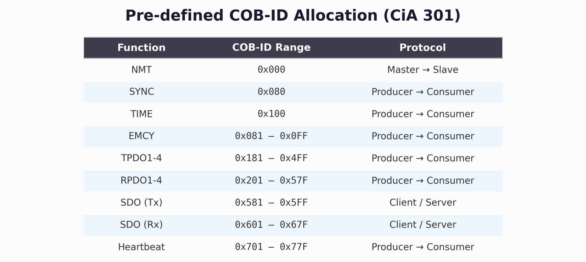
NMT State Machine
Each CANopen node operates in one of the following NMT states, controlled by the NMT Master via two-byte NMT commands (COB-ID 0x000):
| State | NMT Command | Allowed Objects |
|---|---|---|
| Initialization | — | Boot-up message only |
| Pre-operational | 0x80 | SDO, EMCY, NMT, Heartbeat, SYNC, TIME |
| Operational | 0x01 | All objects (PDO + SDO + NMT + EMCY + Heartbeat + SYNC + TIME) |
| Stopped | 0x02 | NMT and Heartbeat only |
After power-on, a CANopen node enters Initialization, executes internal setup, then automatically transitions to Pre-operational state. It announces its presence by sending a boot-up message (Heartbeat frame with state 0x00) on COB-ID 0x700 + Node-ID. The NMT Master can then configure the node via SDO before issuing the "Start Remote Node" command (0x01) to enter the Operational state where PDO communication begins.
15.2 SDO and PDO Services
CANopen provides two fundamentally different data exchange mechanisms: SDO (Service Data Object) for configuration and parameter access, and PDO (Process Data Object) for efficient real-time data exchange.


Service Data Object (SDO)
SDO uses a client/server model for reading and writing Object Dictionary entries. The SDO client (typically the configuration tool or NMT Master) sends a request, and the SDO server (the target node) responds. SDO supports three transfer modes:
| Mode | Data Size | Frames Required | Use Case |
|---|---|---|---|
| Expedited | 1–4 bytes | 1 request + 1 response | Single parameters (node ID, heartbeat time, etc.) |
| Segmented | 5+ bytes | Initiate + N segments + confirm | Medium-length data (string parameters, arrays) |
| Block | Large | Initiate + N blocks + confirm | Firmware download, large data sets |
SDO Frame Structure
An SDO expedited transfer frame is always 8 bytes and contains the following fields:
| Byte | Field | Description |
|---|---|---|
| 0 | Command Byte | Transfer type, direction, and data size indicator |
| 1–2 | Index | 16-bit Object Dictionary index (little-endian) |
| 3 | Sub-index | 8-bit sub-index within the OD entry |
| 4–7 | Data | Up to 4 bytes of parameter data (expedited mode) |
Process Data Object (PDO)
PDOs provide the most efficient real-time data exchange on a CANopen network. Unlike SDO, PDO frames carry no protocol overhead — the entire 8-byte CAN payload is available for process data. PDOs use a producer/consumer model where one node transmits a PDO and any number of nodes can receive it.
PDO behavior is highly configurable through the Object Dictionary:
- Event-driven: PDO is transmitted when a mapped signal changes
- Timer-driven: PDO is transmitted at a configured interval (event timer)
- SYNC-driven: PDO is transmitted upon reception of the SYNC object
- Remote request: PDO is transmitted in response to an RTR frame
PDO mapping defines which Object Dictionary entries are packed into a PDO frame. Static mapping is configured before the node enters Operational state, while dynamic mapping (CiA 301) allows reconfiguration at runtime via SDO. Each mapped object is defined by its Index, Sub-index, and bit length. The total mapped length must not exceed 64 bits (8 bytes). For example, TPDO1 might map three sensor values: Temperature (16-bit at 0x6000:01), Pressure (16-bit at 0x6000:02), and Status (8-bit at 0x6001:00), occupying 40 of the available 64 bits.
15.3 Object Dictionary, EDS and DCF
The Object Dictionary (OD) is the central data structure of every CANopen device. It defines all device parameters, communication settings, and application data as a standardized set of indexed entries. The OD structure follows the rules specified in CiA 301 and is divided into well-defined address ranges.

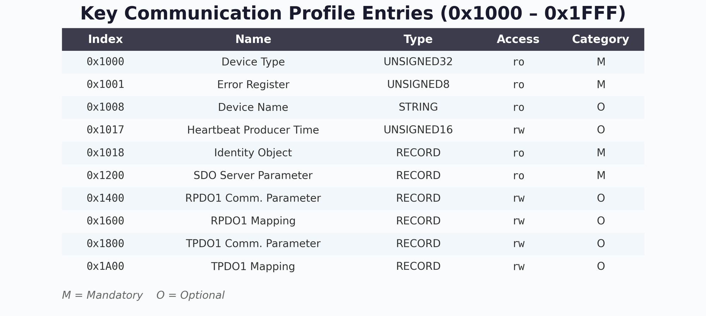

Object Dictionary Address Ranges
| Index Range | Section | Description |
|---|---|---|
| 0x0000 | Not used | Reserved |
| 0x0001–0x025F | Data Types | Standard and complex data type definitions |
| 0x0260–0x0FFF | Reserved | Reserved for future CiA specifications |
| 0x1000–0x1FFF | Communication Profile | CiA 301 parameters: Device Type, Error Register, Heartbeat, SDO/PDO config |
| 0x2000–0x5FFF | Manufacturer Specific | Custom parameters defined by the device manufacturer |
| 0x6000–0x9FFF | Device Profile | Standardized application objects (CiA 401 I/O, CiA 402 Drives, etc.) |
| 0xA000–0xBFFF | Interface Profile | Network and interface-related parameters |
| 0xC000–0xFFFF | Reserved | Reserved for future use |
Key Communication Profile Entries
| Index | Name | Type | Access | Category |
|---|---|---|---|---|
| 0x1000 | Device Type | UNSIGNED32 | ro | Mandatory |
| 0x1001 | Error Register | UNSIGNED8 | ro | Mandatory |
| 0x1008 | Device Name | STRING | ro | Optional |
| 0x1017 | Heartbeat Producer Time | UNSIGNED16 | rw | Optional |
| 0x1018 | Identity Object | RECORD | ro | Mandatory |
| 0x1200 | SDO Server Parameter | RECORD | ro | Mandatory |
| 0x1400 | RPDO1 Communication Parameter | RECORD | rw | Optional |
| 0x1600 | RPDO1 Mapping Parameter | RECORD | rw | Optional |
| 0x1800 | TPDO1 Communication Parameter | RECORD | rw | Optional |
| 0x1A00 | TPDO1 Mapping Parameter | RECORD | rw | Optional |
EDS and DCF Files
The Electronic Data Sheet (EDS) is a standardized file (CiA 306) that describes a device's complete Object Dictionary in a machine-readable INI-like text format. The EDS is provided by the device manufacturer and contains:
- All Object Dictionary entries with index, sub-index, data type, and access rights
- Default values and value ranges for each parameter
- PDO mapping capabilities and communication parameters
- Device identification information (vendor ID, product code, revision)
The Device Configuration File (DCF) is derived from the EDS by a configuration tool. While the EDS describes what a device can do, the DCF defines what it will do in a specific network configuration. The DCF adds:
- Assigned Node-ID and baud rate
- Specific PDO mapping configuration for the target application
- Customized parameter values for the deployment
- Heartbeat timing and other network-specific settings
The typical CANopen commissioning workflow begins with importing the device manufacturer's EDS file into a network configuration tool (e.g., Vector CANopen Architect, Ixxat canAnalyser, or CODESYS). The tool displays the device's capabilities and allows the engineer to configure PDO mappings, heartbeat timing, Node-ID assignment, and application parameters. The tool then generates a DCF file for each node, which can be downloaded to the devices via SDO during the Pre-operational phase or stored in non-volatile memory for automatic configuration at startup.
Device Profiles
CiA defines standardized device profiles that specify the OD entries in the Device Profile area (0x6000–0x9FFF) for specific device categories:
| Profile | Description | Typical Applications |
|---|---|---|
| CiA 401 | Generic I/O Modules | Digital/analog inputs and outputs |
| CiA 402 | Drives and Motion Control | Servo motors, stepper motors, frequency inverters |
| CiA 404 | Measuring Devices | Sensors, encoders, transducers |
| CiA 406 | Encoder Interface | Absolute and incremental encoders |
| CiA 410 | Inclinometer | Tilt sensors, angle measurement |
| CiA 418 | Battery Modules | Battery management systems |
CiA 1301 defines CANopen FD, extending the classical CANopen framework to CAN FD networks. Key differences include: SDO and PDO payloads can use the full 64-byte CAN FD capacity, MPDO (Multiplexed PDO) support is enhanced, and new frame formats accommodate the larger data fields. However, CANopen FD nodes cannot directly interoperate with classical CANopen nodes on the same bus segment without a protocol gateway. For new designs, carefully evaluate whether the increased bandwidth justifies the additional complexity and reduced ecosystem maturity compared to classical CANopen at 1 Mbps.
Chapter 16: CAN DBC File Format
A CAN DBC file (CAN database) is a structured text file that contains the rules for decoding raw CAN bus data into human-readable physical values. DBC files describe messages, signals, their encoding parameters, and metadata — serving as the essential "dictionary" for interpreting any CAN network.
16.1 DBC Syntax and Structure
A DBC file is organized into sections, each beginning with a keyword. The two most critical sections define messages (BO_) and signals (SG_):
Message Definition (BO_)
BO_ <CAN_ID> <MessageName>: <DLC> <Transmitter>
SG_ <SignalName> : <StartBit>|<Length>@<ByteOrder><Sign> (<Scale>,<Offset>) [<Min>|<Max>] "<Unit>" <Receiver>| Field | Description | Rules |
|---|---|---|
| CAN_ID | CAN identifier in decimal | For 29-bit IDs, bit 31 is set as extended flag (ID + 0x80000000) |
| MessageName | Unique message name | 1–32 chars, [A-z], digits, underscores |
| DLC | Data length code | Integer 0–1785 (8 for Classical CAN, up to 64 for CAN FD) |
| Transmitter | Sending node name | Vector__XXX if unknown |
Signal Definition (SG_)
| Field | Description | Example |
|---|---|---|
| StartBit | Bit position in payload (0-indexed) | 24 |
| Length | Signal length in bits | 16 |
| ByteOrder | @1 = Little-endian (Intel), @0 = Big-endian (Motorola) | @1 |
| Sign | + = unsigned, − = signed | + |
| Scale | Multiplication factor | 0.125 |
| Offset | Added after scaling | 0 |
| [Min|Max] | Physical value range | [0|8031.875] |
| Unit | Engineering unit string | "rpm" |
Complete DBC Example — J1939 Engine Speed and Vehicle Speed
VERSION ""
NS_ :
CM_
BA_DEF_
BA_
BA_DEF_DEF_
BS_:
BU_:
BO_ 2364540158 EEC1: 8 Vector__XXX
SG_ EngineSpeed : 24|16@1+ (0.125,0) [0|8031.875] "rpm" Vector__XXX
BO_ 2566844926 CCVS1: 8 Vector__XXX
SG_ WheelBasedVehicleSpeed : 8|16@1+ (0.00390625,0) [0|250.996] "km/h" Vector__XXX
CM_ BO_ 2364540158 "Electronic Engine Controller 1";
CM_ SG_ 2364540158 EngineSpeed "Actual engine speed calculated over a
minimum crankshaft angle of 720 degrees divided by the number of cylinders.";
CM_ BO_ 2566844926 "Cruise Control/Vehicle Speed 1";
BA_DEF_ SG_ "SPN" INT 0 524287;
BA_DEF_ BO_ "VFrameFormat" ENUM "StandardCAN","ExtendedCAN","reserved","J1939PG";
BA_DEF_ "BusType" STRING ;
BA_DEF_ "ProtocolType" STRING ;
BA_DEF_DEF_ "SPN" 0;
BA_DEF_DEF_ "VFrameFormat" "J1939PG";
BA_DEF_DEF_ "BusType" "";
BA_DEF_DEF_ "ProtocolType" "";
BA_ "ProtocolType" "J1939";
BA_ "BusType" "CAN";
BA_ "VFrameFormat" BO_ 2364540158 3;
BA_ "SPN" SG_ 2364540158 EngineSpeed 190;J1939 uses 29-bit extended CAN IDs. In DBC files, the extended ID flag is stored by adding 0x80000000 to the CAN ID. For example, CAN ID 0x0CF00400 becomes DBC ID 2364540158 (= 0x0CF00400 + 0x80000000 = 0x8CF00400 = 2364539904 + 254). The VFrameFormat attribute "J1939PG" identifies this message as a J1939 Parameter Group.
16.2 Signal Decoding
The decoding process converts raw CAN data bytes to physical engineering values using the linear formula:
Step-by-Step Example: Decode EngineSpeed from Raw CAN Frame
Given the raw CAN frame:
CAN ID: 0CF00400 Data: FF FF FF 68 13 FF FF FFStep 1 — Identify the message: CAN ID 0x0CF00400 matches DBC message EEC1 (ID 2364540158 with extended flag).
Step 2 — Extract raw signal bytes: Signal EngineSpeed starts at bit 24 (byte 3, bit 0) with length 16 bits. The raw bytes at positions 3–4 are 0x68 and 0x13.
Step 3 — Apply byte order: Little-endian (@1) → LSB first: raw value = 0x1368 = 4968 decimal.
Step 4 — Apply scale and offset:
Byte Order: Intel vs Motorola
The byte order significantly affects how multi-byte signals are extracted from the CAN data field:
| Property | Intel (@1) — Little-Endian | Motorola (@0) — Big-Endian |
|---|---|---|
| LSB Position | At start bit | At start bit |
| MSB Position | Higher byte addresses | Lower byte addresses |
| Byte Fill Direction | LSB → MSB: left to right | MSB → LSB: right to left |
| Common In | J1939, most European OEMs | Many Asian OEMs, some legacy systems |
Using the wrong byte order is the single most common source of incorrect CAN signal decoding. If decoded values appear wrong by orders of magnitude or produce unexpected negative numbers, verify the byte order setting first. J1939 signals are always little-endian (Intel), but OEM-specific CAN messages may use either convention.
16.3 Advanced DBC Features
Comments (CM_)
DBC files support comments for messages, signals, and general descriptions:
CM_ BO_ 2364540158 "Electronic Engine Controller 1";
CM_ SG_ 2364540158 EngineSpeed "Actual engine speed.";
CM_ "This DBC file covers the J1939 powertrain network.";Attributes (BA_DEF_ / BA_)
Attributes extend DBC metadata with custom properties. Common attributes include:
| Attribute | Scope | Description |
|---|---|---|
| BusType | Global | Bus type string ("CAN", "CAN FD") |
| ProtocolType | Global | Protocol identifier ("J1939", "OBD2") |
| VFrameFormat | Message | Frame format (StandardCAN, ExtendedCAN, J1939PG) |
| SPN | Signal | SAE J1939 Suspect Parameter Number |
| GenMsgCycleTime | Message | Nominal transmission cycle time in ms |
| SystemSignalLongSymbol | Signal | Extended signal name (beyond 32-char limit) |
Signal Multiplexing
Multiplexing allows the same CAN ID to carry different signals depending on the value of a multiplexor signal. This is used in OBD-II (where the PID acts as multiplexor), UDS, and CCP/XCP protocols:
BO_ 2024 OBD2_Response: 8 ECU
SG_ ServiceMode m : 0|8@1+ (1,0) [0|255] "" Tester
SG_ PID m : 8|8@1+ (1,0) [0|255] "" Tester
SG_ EngineRPM m12 : 16|16@1+ (0.25,0) [0|16383.75] "rpm" Tester
SG_ VehicleSpeed m13 : 16|8@1+ (1,0) [0|255] "km/h" Tester
SG_ CoolantTemp m5 : 16|8@1+ (1,-40) [-40|215] "°C" TesterIn the SG_ definition, m after the signal name designates the multiplexor signal. m12 means this signal is valid when the multiplexor value equals 12 (PID 0x0C = Engine RPM). m13 is valid when PID = 0x0D (Vehicle Speed). This mechanism enables a single CAN ID to carry hundreds of different parameters — the DBC tool selects the correct decoding rule based on the multiplexor value.
DBC File Tools and Ecosystem
| Tool | Type | DBC Capability |
|---|---|---|
| Vector CANdb++ | Commercial Editor | Full DBC creation, editing, validation |
| PEAK Symbol Editor | Free Editor | DBC creation and symbol management |
| SavvyCAN | Open Source | DBC decode, reverse engineering |
| cantools (Python) | Open Source Library | Parse, encode, decode DBC programmatically |
| asammdf (Python) | Open Source Library | MF4 log files + DBC decoding + plotting |
| CANalyzer / CANoe | Commercial | Real-time DBC decode, simulation, testing |
Standardized DBC files are available for J1939 (from SAE — covers all standard PGNs/SPNs), OBD-II (standard PIDs), and ISOBUS. These allow immediate decoding of standard parameters across any vehicle or machine using that protocol. Manufacturer-specific signals (proprietary PGNs, custom PIDs) require OEM-specific DBC files which are typically confidential.
Chapter 17: CAN Bus Data Logging & Analysis
Data logging is an essential practice in CAN bus engineering — it allows engineers to capture, store, and analyze real-time bus traffic for development, diagnostics, compliance, and fleet management. This chapter covers the complete data logging pipeline, from hardware interfaces and file formats to software tools and Python-based analysis techniques.
17.1 Introduction to CAN Data Logging
CAN data logging captures raw or decoded bus messages for offline analysis. The logged data can include timestamps, CAN IDs, DLC (Data Length Code), and the data payload — enabling engineers to reconstruct the exact sequence of events that occurred on the bus.
Why Log CAN Data?
- Development & Testing: ECU calibration, protocol validation, regression testing, and integration verification
- Diagnostics & Troubleshooting: Capturing intermittent faults, DTC logging, fault replay, and root cause analysis
- Fleet Monitoring: Remote diagnostics, predictive maintenance, fuel efficiency tracking, and OTA update verification
- Compliance & Certification: Emissions data recording (J1939/OBD-II), type approval documentation, and audit trails
- Incident Analysis: Post-crash data extraction, event reconstruction, and liability documentation
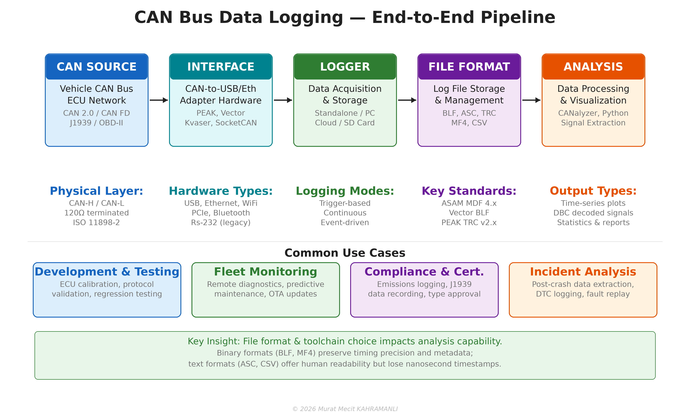
Logging Architecture
A typical CAN data logging setup consists of five stages:
- CAN Source: The vehicle or device CAN bus (CAN 2.0A/B, CAN FD, J1939, OBD-II)
- Interface Hardware: CAN-to-USB, CAN-to-Ethernet, or CAN-to-WiFi adapter
- Data Acquisition: Logger software or standalone hardware recording to storage
- File Format: BLF, ASC, TRC, MF4/MDF, or CSV files
- Analysis & Visualization: Signal extraction, plotting, statistics, and reporting
17.2 CAN Log File Formats
The choice of log file format significantly impacts storage efficiency, analysis capability, and tool compatibility. The five most common formats in the CAN ecosystem are BLF, ASC, TRC, MF4, and CSV.
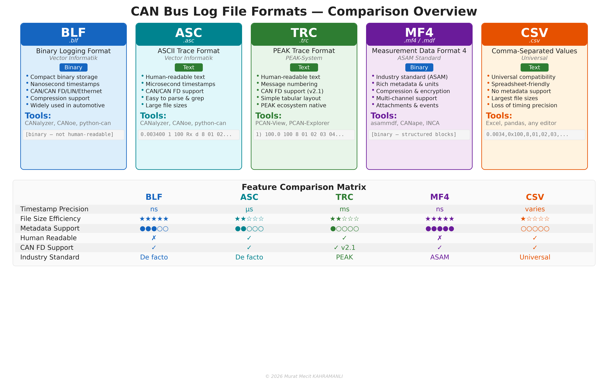
BLF — Binary Logging Format (Vector)
BLF is Vector Informatik's proprietary binary format, widely used in the automotive industry. It offers compact storage with nanosecond timestamp precision and supports CAN, CAN FD, LIN, and Automotive Ethernet. BLF files can be read by CANalyzer, CANoe, and the open-source python-can library.
# Reading a BLF file with python-can
import can
log = can.BLFReader('vehicle_trace.blf')
for msg in log:
print(f" {msg.timestamp:.6f} ID: 0x{msg.arbitration_id:03X} "
f"DLC: {msg.dlc} Data: {msg.data.hex()}")ASC — ASCII Trace Format (Vector)
ASC is a human-readable text format also from Vector. Each line contains a timestamp, channel, CAN ID, direction, DLC, and data bytes. While easy to read and parse, ASC files are significantly larger than BLF and have microsecond (not nanosecond) precision.
date Wed Jan 15 10:23:45.123 am 2025
base hex timestamps absolute
0.003400 1 100 Rx d 8 01 02 03 04 05 06 07 08
0.008200 1 200 Rx d 8 A1 B2 C3 D4 E5 F6 07 18
0.013100 1 7DF Tx d 8 02 01 00 00 00 00 00 00TRC — PEAK Trace Format
TRC is PEAK-System's native trace format. Version 1.x supports CAN 2.0 only, while version 2.1 adds CAN FD support. TRC files use a simple tabular text layout with message numbering.
;$FILEVERSION=2.1
; Start time: 15.01.2025 10:23:45.123
;
; Message Number) Time ID DLC Data Bytes
1) 0.0 100 8 01 02 03 04 05 06 07 08
2) 100.0 200 8 A1 B2 C3 D4 E5 F6 07 18
3) 200.0 7DF 8 02 01 00 00 00 00 00 00MF4/MDF — Measurement Data Format (ASAM)
MDF (Measurement Data Format) is the ASAM standard for measurement data storage. MDF4 (file extension .mf4 or .mdf) is the current version, offering rich metadata, compression, multi-channel support, and embedded attachments. It is the recommended format for professional automotive data acquisition.
CSV — Comma-Separated Values
CSV is a universal text format supported by virtually every tool. While easy to use with spreadsheets and scripts, CSV files are the largest format option, offer no metadata support, and lose timing precision due to text-based number representation.
timestamp,id,dlc,data
0.003400,0x100,8,01 02 03 04 05 06 07 08
0.008200,0x200,8,A1 B2 C3 D4 E5 F6 07 18
0.013100,0x7DF,8,02 01 00 00 00 00 00 00| Feature | BLF | ASC | TRC | MF4 | CSV |
|---|---|---|---|---|---|
| Type | Binary | Text | Text | Binary | Text |
| Timestamp Precision | ns | μs | ms | ns | varies |
| File Size Efficiency | Excellent | Poor | Poor | Excellent | Worst |
| Metadata Support | Medium | Low | Low | Excellent | None |
| Human Readable | No | Yes | Yes | No | Yes |
| CAN FD Support | Yes | Yes | v2.1+ | Yes | Yes |
| Compression | Yes | No | No | Yes (zlib) | No |
| Primary Tool | CANalyzer | CANalyzer | PCAN-View | CANape/asammdf | Any |
17.3 ASAM MDF Standard
The ASAM Measurement Data Format (MDF) is the industry-standard binary file format for storing measured data in automotive development. The current version, MDF4 (ASAM MDF v4.x), supersedes the legacy MDF3 format and is supported by all major measurement tools.
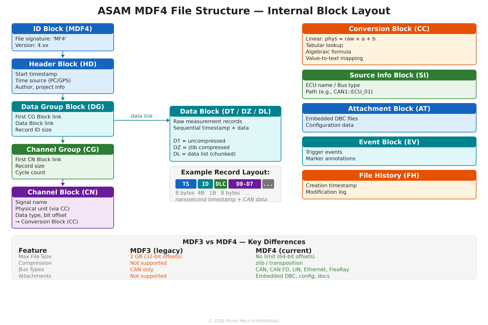
MDF4 Block Hierarchy
An MDF4 file is organized as a linked list of typed blocks:
- ID Block: File signature ('MF4') and version identifier
- Header Block (HD): Start timestamp, time source (PC clock, GPS, PTP), author, and project metadata
- Data Group Block (DG): Links to Channel Group and Data blocks; defines record structure
- Channel Group Block (CG): Groups related channels (signals) with shared timestamps
- Channel Block (CN): Individual signal definitions with name, unit, data type, and bit offset
- Conversion Block (CC): Physical value conversion rules (linear, tabular, algebraic, value-to-text)
- Data Block (DT/DZ/DL): Raw measurement records — DT (uncompressed), DZ (zlib compressed), DL (chunked data list)
MDF4 Advantages Over MDF3
| Feature | MDF3 (Legacy) | MDF4 (Current) |
|---|---|---|
| Max File Size | 2 GB (32-bit offsets) | No limit (64-bit offsets) |
| Compression | Not supported | zlib / transposition |
| Bus Types | CAN only | CAN, CAN FD, LIN, Ethernet, FlexRay |
| Attachments | Not supported | Embedded DBC, config, documentation |
| Events | Basic markers | Rich event blocks with metadata |
| Encryption | Not supported | AES-128/256 encryption |
| XML Metadata | Not supported | Structured XML metadata blocks |
17.4 CAN Logging Hardware
CAN logging hardware ranges from simple USB adapters for PC-based logging to sophisticated standalone data loggers that operate autonomously in vehicles. The choice depends on the use case, budget, and required features.
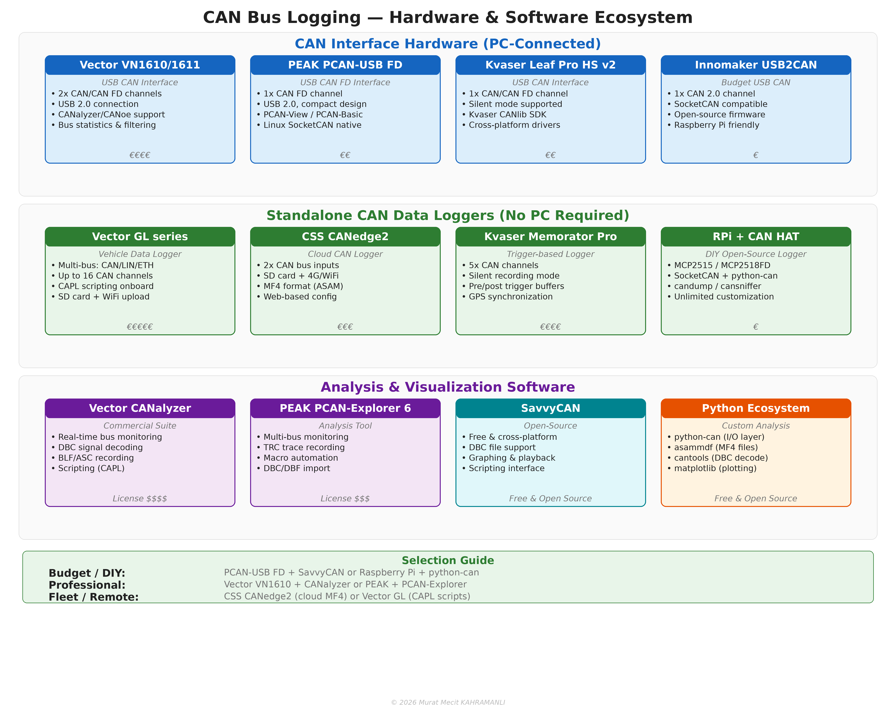
PC-Connected CAN Interfaces
These devices connect to a PC via USB, Ethernet, or PCIe and require companion software for logging:
| Device | Connection | CAN FD | Channels | Software | Price Range |
|---|---|---|---|---|---|
| Vector VN1610/1611 | USB 2.0 | Yes | 2 | CANalyzer/CANoe | €€€€ |
| PEAK PCAN-USB FD | USB 2.0 | Yes | 1 | PCAN-View/PCAN-Basic | €€ |
| Kvaser Leaf Pro HS v2 | USB 2.0 | Yes | 1 | Kvaser CANlib SDK | €€ |
| Innomaker USB2CAN | USB 2.0 | No | 1 | SocketCAN (Linux) | € |
| Intrepid ValueCAN 4-2 | USB 2.0 | Yes | 2 | Vehicle Spy | €€€ |
Standalone CAN Data Loggers
Standalone loggers operate without a PC, recording directly to SD cards, internal memory, or uploading to cloud services:
- Vector GL series: Professional vehicle data loggers with up to 16 CAN channels, CAPL scripting, and WiFi/4G upload. Used extensively in OEM development and fleet testing.
- CSS Electronics CANedge2: Compact cloud-connected CAN logger with 2 CAN channels, SD card + 4G/WiFi, logging in ASAM MF4 format. Features web-based configuration.
- Kvaser Memorator Pro 5×HS: 5-channel CAN logger with trigger-based recording, pre/post trigger buffers, GPS synchronization, and silent bus operation.
- Raspberry Pi + CAN HAT: DIY open-source logger using MCP2515 or MCP2518FD CAN controllers. Runs SocketCAN + python-can for unlimited customization at minimal cost.
Linux SocketCAN Setup
For budget-friendly and highly customizable logging, Linux SocketCAN provides a native kernel-level CAN interface:
# Set up CAN interface
$ sudo ip link set can0 type can bitrate 500000
$ sudo ip link set can0 up
# Basic logging with candump
$ candump -l can0 # Log to candump-*.log
$ candump -L can0 > trace.asc # Log in ASC format
# Advanced: python-can with SocketCAN
import can
bus = can.interface.Bus(channel='can0', interface='socketcan')
logger = can.BLFWriter('capture.blf')
notifier = can.Notifier(bus, [logger])
# ... recording in background ...17.5 Analysis Software & Python Ecosystem
CAN data analysis spans from commercial GUI tools to open-source Python libraries. The Python ecosystem has become particularly powerful for automated, scriptable, and reproducible analysis workflows.
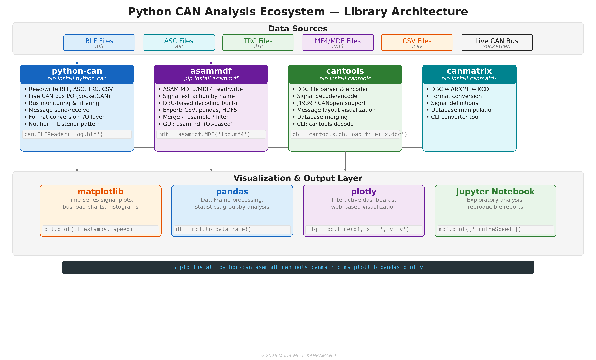
Commercial Analysis Tools
| Tool | Vendor | Key Features | License |
|---|---|---|---|
| CANalyzer | Vector | Bus monitoring, DBC decode, BLF/ASC recording, CAPL scripting | Commercial |
| CANoe | Vector | Full simulation + analysis, network design, automated testing | Commercial |
| PCAN-Explorer 6 | PEAK-System | Multi-bus monitoring, TRC recording, macros, DBC import | Commercial |
| Vehicle Spy | Intrepid CS | Multi-protocol analysis, scripting, simulation | Commercial |
| SavvyCAN | Open-source | Free, cross-platform, DBC support, graphing, scripting | Free (GPL) |
Python Libraries for CAN Analysis
python-can — The foundational CAN library for Python. Provides a unified interface for reading/writing BLF, ASC, TRC, and CSV files, as well as live CAN bus I/O through SocketCAN, PCAN, Kvaser, and Vector interfaces.
import can
# Read a BLF file and print all messages
log = can.BLFReader('vehicle_trace.blf')
for msg in log:
print(f" {msg.timestamp:.6f} 0x{msg.arbitration_id:03X} "
f"[{msg.dlc}] {msg.data.hex(' ')}")
# Convert BLF to ASC
with can.BLFReader('input.blf') as reader:
with can.ASCWriter('output.asc') as writer:
for msg in reader:
writer.on_message_received(msg)asammdf — The primary library for ASAM MDF3/MDF4 files. Supports signal extraction by name, DBC-based decoding, export to CSV/pandas/HDF5, and comes with a Qt-based GUI.
from asammdf import MDF
# Open an MF4 file
mdf = MDF('measurement.mf4')
# Extract specific signals
speed = mdf.get('VehicleSpeed')
rpm = mdf.get('EngineRPM')
# Export to pandas DataFrame
df = mdf.to_dataframe()
# Apply DBC decoding
mdf_decoded = mdf.extract_bus_logging(
database_files={'CAN': ['vehicle.dbc']}
)cantools — A DBC file parser and signal decoder/encoder. Supports J1939 and CANopen protocol extensions. Provides both a Python API and a command-line interface.
import cantools
# Load DBC database
db = cantools.db.load_file('vehicle.dbc')
# Decode a CAN message
msg_def = db.get_message_by_frame_id(0x100)
decoded = msg_def.decode(b'\x01\x02\x03\x04\x05\x06\x07\x08')
print(decoded)
# {'EngineSpeed': 1234.5, 'VehicleSpeed': 67.8, ...}
# Encode a CAN message
data = msg_def.encode({'EngineSpeed': 1500.0, 'VehicleSpeed': 80.0})
print(data.hex())canmatrix — A CAN database conversion library. Converts between DBC, ARXML (AUTOSAR), KCD (Kayak), SYM, and other database formats.
import canmatrix
# Convert DBC to ARXML
canmatrix.formats.convert('vehicle.dbc', 'vehicle.arxml')
# Load and inspect a database
db = canmatrix.formats.loadp('vehicle.dbc')
for msg in db:
print(f" 0x{msg.arbitration_id.id:03X} {msg.name} "
f"DLC={msg.size} Signals={len(msg.signals)}")17.6 Practical Analysis with Python
This section demonstrates complete analysis workflows using the Python ecosystem.
Workflow 1: BLF Log → DBC Decode → Plot
import can
import cantools
import matplotlib.pyplot as plt
# Load DBC and BLF
db = cantools.db.load_file('vehicle.dbc')
log = can.BLFReader('drive_test.blf')
# Collect decoded signals
timestamps = []
speeds = []
rpms = []
for msg in log:
try:
msg_def = db.get_message_by_frame_id(msg.arbitration_id)
decoded = msg_def.decode(msg.data)
if 'VehicleSpeed' in decoded:
timestamps.append(msg.timestamp)
speeds.append(decoded['VehicleSpeed'])
if 'EngineRPM' in decoded:
rpms.append(decoded['EngineRPM'])
except (KeyError, cantools.db.DecodeError):
pass # Unknown message or decode error
# Plot results
fig, (ax1, ax2) = plt.subplots(2, 1, figsize=(14, 8), sharex=True)
ax1.plot(timestamps[:len(speeds)], speeds, color='#1565C0', linewidth=1)
ax1.set_ylabel('Vehicle Speed (km/h)')
ax1.set_title('CAN Bus Log Analysis — DBC Decoded Signals')
ax1.grid(True, alpha=0.3)
ax2.plot(timestamps[:len(rpms)], rpms, color='#2E7D32', linewidth=1)
ax2.set_ylabel('Engine RPM')
ax2.set_xlabel('Time (seconds)')
ax2.grid(True, alpha=0.3)
plt.tight_layout()
plt.savefig('analysis_output.png', dpi=150)
plt.show()Workflow 2: MF4 Signal Extraction with asammdf
from asammdf import MDF
import matplotlib.pyplot as plt
# Open MF4 and extract signals
mdf = MDF('fleet_recording.mf4')
# List all available signals
for i, group in enumerate(mdf.groups):
for ch in group.channels:
print(f" Group {i}: {ch.name} [{ch.unit}]")
# Extract and plot specific signals
speed = mdf.get('VehicleSpeed')
fuel_rate = mdf.get('FuelRate')
coolant = mdf.get('CoolantTemperature')
fig, axes = plt.subplots(3, 1, figsize=(14, 10), sharex=True)
axes[0].plot(speed.timestamps, speed.samples, color='#1565C0')
axes[0].set_ylabel('Speed (km/h)')
axes[1].plot(fuel_rate.timestamps, fuel_rate.samples, color='#E65100')
axes[1].set_ylabel('Fuel Rate (L/h)')
axes[2].plot(coolant.timestamps, coolant.samples, color='#2E7D32')
axes[2].set_ylabel('Coolant Temp (°C)')
axes[2].set_xlabel('Time (s)')
for ax in axes:
ax.grid(True, alpha=0.3)
plt.suptitle('MF4 Signal Analysis — Fleet Recording', fontsize=14)
plt.tight_layout()
plt.savefig('mf4_analysis.png', dpi=150)Workflow 3: J1939 Log Analysis
import can
import cantools
# Load J1939 DBC
j1939_db = cantools.db.load_file('J1939.dbc')
# Read log file
log = can.BLFReader('truck_highway.blf')
# J1939 PGN extraction
engine_data = []
for msg in log:
# Extract PGN from 29-bit CAN ID
pgn = (msg.arbitration_id >> 8) & 0x3FFFF
if pgn == 0xF004: # Electronic Engine Controller 1 (EEC1)
decoded = j1939_db.get_message_by_frame_id(
msg.arbitration_id).decode(msg.data)
engine_data.append({
'time': msg.timestamp,
'rpm': decoded.get('EngineSpeed', 0),
'torque': decoded.get('ActualEngineTorque', 0),
'load': decoded.get('DriversDemandEnginePercentTorque', 0),
})
print(f"Collected {len(engine_data)} EEC1 messages")
print(f"RPM range: {min(d['rpm'] for d in engine_data):.0f} - "
f"{max(d['rpm'] for d in engine_data):.0f}")17.7 Format Conversion Workflows
Converting between CAN log formats is a common task when switching tools or preparing data for different analysis pipelines. Python libraries make this straightforward.
Common Conversion Paths
| From → To | Tool / Library | Command / Code |
|---|---|---|
| BLF → ASC | python-can | can.BLFReader → can.ASCWriter |
| BLF → CSV | python-can | can.BLFReader → can.CSVWriter |
| BLF → MF4 | asammdf | MDF.from_bus_logging from BLF source |
| ASC → BLF | python-can | can.ASCReader → can.BLFWriter |
| TRC → BLF | python-can | can.TRCReader → can.BLFWriter |
| MF4 → CSV | asammdf | mdf.to_dataframe().to_csv() |
| MF4 → pandas | asammdf | mdf.to_dataframe() |
| DBC → ARXML | canmatrix | canmatrix.formats.convert() |
Universal Converter Script
#!/usr/bin/env python3
"""Universal CAN log format converter using python-can."""
import can
import sys
READERS = {
'.blf': can.BLFReader,
'.asc': can.ASCReader,
'.trc': can.TRCReader,
'.csv': can.CSVReader,
}
WRITERS = {
'.blf': can.BLFWriter,
'.asc': can.ASCWriter,
'.csv': can.CSVWriter,
}
def convert(input_file, output_file):
in_ext = '.' + input_file.rsplit('.', 1)[-1].lower()
out_ext = '.' + output_file.rsplit('.', 1)[-1].lower()
reader_cls = READERS.get(in_ext)
writer_cls = WRITERS.get(out_ext)
if not reader_cls or not writer_cls:
print(f"Unsupported format: {in_ext} or {out_ext}")
return
count = 0
with reader_cls(input_file) as reader:
with writer_cls(output_file) as writer:
for msg in reader:
writer.on_message_received(msg)
count += 1
print(f"Converted {count} messages: {input_file} → {output_file}")
if __name__ == '__main__':
convert(sys.argv[1], sys.argv[2])MF4 Export with DBC Decoding
from asammdf import MDF
# Open MF4 file and decode with DBC
mdf = MDF('raw_recording.mf4')
mdf_decoded = mdf.extract_bus_logging(
database_files={'CAN': ['vehicle.dbc']}
)
# Export decoded signals to CSV
df = mdf_decoded.to_dataframe()
df.to_csv('decoded_signals.csv', index=True)
# Export specific signals only
speed = mdf_decoded.get('VehicleSpeed')
rpm = mdf_decoded.get('EngineRPM')
import pandas as pd
pd.DataFrame({
'time': speed.timestamps,
'speed_kmh': speed.samples,
}).to_csv('speed_only.csv', index=False)
print(f"Exported {len(df)} records to CSV")python-can + asammdf + cantools combination covers virtually all CAN data logging and analysis needs.
Appendix A: Reference Tables
A.1 CAN Identifier Ranges
| Range (Hex) | Range (Dec) | Usage |
|---|---|---|
| 0x000-0x0FF | 0-255 | Highest priority system messages |
| 0x100-0x3FF | 256-1023 | High priority messages |
| 0x400-0x6FF | 1024-1791 | Medium priority messages |
| 0x700-0x7EF | 1792-2031 | Low priority messages |
| 0x7F0-0x7FF | 2032-2047 | Lowest priority, diagnostic |
A.2 J1939 Address Assignments
| Address (Hex) | Address (Dec) | Function |
|---|---|---|
| 0x00 | 0 | Engine Controller #1 |
| 0x01 | 1 | Engine Controller #2 |
| 0x03 | 3 | Transmission Controller |
| 0x0B | 11 | Brake System Controller |
| 0x14 | 20 | Instrument Cluster |
| 0x21 | 33 | Body Controller |
| 0x33 | 51 | Cab Controller |
| 0x80 | 128 | Primary Diagnostics Tool |
| 0xF9 | 249 | OBD-II Tool |
| 0xFE | 254 | Null Address (cannot claim) |
| 0xFF | 255 | Global Address (broadcast) |
A.3 UDS Data Identifiers (DID)
| DID (Hex) | Description |
|---|---|
| F180 | Boot Software Identification |
| F181 | Application Software Identification |
| F182 | Application Data Identification |
| F183 | Boot Software Fingerprint |
| F184 | Application Software Fingerprint |
| F185 | Application Data Fingerprint |
| F186 | Active Diagnostic Session |
| F187 | Vehicle Manufacturer Spare Part Number |
| F188 | Vehicle Manufacturer ECU Software Number |
| F189 | Vehicle Manufacturer ECU Hardware Number |
| F18A | System Supplier Identifier |
| F190 | VIN (Vehicle Identification Number) |
| F197 | System Name or Engine Type |
| F193 | System Supplier ECU Hardware Version Number |
| F194 | System Supplier ECU Software Version Number |
| F199 | Programming Date |
| F19D | ECU Serial Number |
References
- ISO 11898-1:2015. Road vehicles - Controller area network (CAN) - Part 1: Data link layer and physical signalling. International Organization for Standardization.
- ISO 11898-2:2016. Road vehicles - Controller area network (CAN) - Part 2: High-speed medium access unit. International Organization for Standardization.
- ISO 14229-1:2020. Road vehicles - Unified diagnostic services (UDS) - Part 1: Application layer. International Organization for Standardization.
- SAE J1939-21:2018. Data Link Layer. SAE International.
- SAE J1939-71:2018. Vehicle Application Layer. SAE International.
- SAE J1939-73:2018. Application Layer - Diagnostics. SAE International.
- SAE J1939-81:2017. Network Management. SAE International.
- ISO 15765-2:2016. Road vehicles - Diagnostic communication over Controller Area Network (DoCAN) - Part 2: Transport protocol and network layer services. International Organization for Standardization.
- ISO 11452-2:2019. Road vehicles - Component test methods for electrical disturbances from narrowband radiated electromagnetic energy - Part 2: Absorber-lined shielded enclosure. International Organization for Standardization.
- ISO 7637-2:2011. Road vehicles - Electrical disturbances from conduction and coupling - Part 2: Electrical transient conduction along supply lines only. International Organization for Standardization.
- Etschberger, K. (2011). Controller Area Network: Basics, Protocols, Chips and Applications. IXXAT Press.
- Pfeiffer, O., Ayre, A., & Keydel, C. (2008). Embedded Networking with CAN and CANopen. RTC Books.
- Voss, W. (2008). A Comprehensible Guide to J1939. Copperhill Technologies.
- Zimmermann, W., & Schmidgall, R. (2014). Bussysteme in der Fahrzeugtechnik: Protokolle und Standards. Springer Vieweg.
- Bosch, R. (2012). CAN Specification 2.0. Robert Bosch GmbH.
- Bosch, R. (2012). CAN with Flexible Data-Rate Specification Version 1.0. Robert Bosch GmbH.
- CiA 301. CANopen Application Layer and Communication Profile. CAN in Automation.
- CiA 305. Layer Setting Services (LSS) and Protocols. CAN in Automation.
- CiA 610-1. CAN XL Specification. CAN in Automation.
- NXP Semiconductors. (2020). AN96116: CAN Bit Timing Application Note. NXP B.V.
- SAE J1939-22:2018. Transport Layer for CAN FD Networks. SAE International.
- SAE J1939-17:2019. CAN FD Physical Layer. SAE International.
- CiA 306. Electronic Data Sheet (EDS) Specification. CAN in Automation.
- CiA 401. Device Profile for Generic I/O Modules. CAN in Automation.
- CiA 402. Device Profile for Drives and Motion Control. CAN in Automation.